Chapter 2: From 1G to 4G LTE¶
Every network running today carries the DNA of its ancestors. This chapter travels from analogue 1G through GSM, its SIM cards, SMS and ciphers, the CDMA rivals, GPRS and EDGE, and 3G with HSPA, to 4G LTE and LTE-Advanced. It then opens up the LTE core, the attach procedure, IMS voice (VoLTE and Wi-Fi calling), the IoT variants LTE-M and NB-IoT, and the SS7 and Diameter signalling that ties operators together — ending with the switch-offs of 2G and 3G and the lessons each generation taught.
2.1 1G: The Analogue Pioneers (AMPS, NMT, TACS)¶
First-generation (1G) networks, launched from 1979, carried voice as analogue radio — much like FM radio, one conversation per pair of channels. They proved that cellular networks worked, but phones were bulky and expensive, capacity was small, anyone with a scanner could listen in, and phone identities could be copied ('cloned').
Think of it like…
1G was like a giant walkie-talkie system with good manners: it connected you, but anyone tuned to the right channel could eavesdrop, and copying someone's name badge let you call on their bill.
Real-world example
In 1984 Frank, a Chicago estate agent, pays $3,995 for a Motorola DynaTAC 8000X — about 0.8 kg, roughly 30 minutes of talk time. His calls on Ameritech's AMPS network travel as FM signals on 30 kHz channels. One month his bill lists hundreds of calls he never made: criminals have captured his phone's serial number over the air and cloned it.
How it works¶
- The area is divided into cells; each cell gets a set of channel pairs — 30 kHz in AMPS, 25 kHz in TACS — using FDMA with FDD.
- When you dial, the phone sends its number and serial number over a digital control channel; the switch (MTSO) assigns a voice channel.
- Voice travels as analogue FM; in-call signalling uses supervisory tones and short data bursts that briefly blank the audio.
- For handover the switch notices a weak signal and orders the phone to retune to a free channel in the next cell.
- Roaming between operators was manual or limited — except NMT, which offered automatic roaming across the Nordic countries.
Who uses it
Students and historians today, but 1G's lessons about security, open standards and spectrum efficiency shaped every later generation.
Key takeaway
Dates to remember: 1973 first handheld call (Martin Cooper, Motorola), 1979 NTT in Tokyo, 1981 NMT, 1983 AMPS in Chicago, 1985 TACS in the UK.
Going deeper
- AMPS used 824-849 MHz for uplink and 869-894 MHz for downlink with 30 kHz channels; each US market had two licensees (A and B carriers), each with 416 channel pairs after the late-1980s band expansion.
- With a 7-cell reuse pattern and three sectors per site, each AMPS cell had only a few dozen voice channels — capacity that collapsed as phones became popular in the early 1990s.
- Phones sent their Mobile Identification Number and Electronic Serial Number unencrypted; cloning fraud cost US operators hundreds of millions of dollars a year in the 1990s until authentication and digital systems arrived.
- NMT was an open specification written by the Nordic telecom administrations, so many manufacturers could build equipment — an approach that directly inspired GSM.
- Other national systems included NTT's system in Japan, C-Netz in Germany (1985), Radiocom 2000 in France and RTMS in Italy, all incompatible with each other.
- Motorola's Narrowband AMPS (N-AMPS) split each 30 kHz channel into three 10 kHz channels to triple capacity as a stop-gap before digital systems.
Common mistakes & misconceptions
- Thinking analogue meant poor sound: 1G voice was often clear; the real problems were capacity, security and cost.
- Believing 1G was one system: dozens of incompatible national systems meant most phones did not work abroad.
- Assuming 1G had no data at all: modems over analogue voice channels managed a few kbit/s, slowly and unreliably.
Key standards, network functions, technologies & tools¶
| Name | What it does | Example |
|---|---|---|
| AMPS Bell Labs; EIA/TIA-553 · Standard · Legacy · 1G |
Advanced Mobile Phone System: the North American 1G standard using 30 kHz FM channels in the 800 MHz band. | Ameritech launched AMPS in Chicago in October 1983, the first commercial cellular service in the US. |
| NMT (Nordic Mobile Telephone) Nordic telecom administrations · Standard · Legacy · 1G |
Open Nordic 1G standard (450 MHz from 1981, 900 MHz from 1986) with automatic cross-border roaming. | A Swedish truck driver in 1985 could receive calls in Norway and Finland on the same NMT phone. |
| TACS / ETACS UK adaptation of AMPS · Standard · Legacy · 1G |
Total Access Communication System: AMPS-like 1G at 900 MHz with 25 kHz channels, used in the UK and elsewhere. | Vodafone and Cellnet both launched UK TACS services in January 1985. |
| NTT cellular (Tokyo, 1979) Nippon Telegraph and Telephone · Technology · Legacy · 1G |
The world's first commercial cellular network, launched in Tokyo in 1979, initially for car phones. | Business users in 1979 Tokyo paid heavily for car phones on NTT's analogue network. |
| Other national 1G systems C-Netz (DE), Radiocom 2000 (FR), RTMS (IT) · Technology · Legacy · 1G |
Incompatible national analogue systems across Europe, a fragmentation that motivated pan-European GSM. | A German businessman's C-Netz phone was useless on a trip to Paris in 1988. |
| MTSO (mobile switching office) AT&T / Bell System terminology · Equipment · Legacy · 1G |
The 1G switching centre that assigned channels, managed handovers and connected calls to the fixed phone network. | Chicago's MTSO assigned Frank a free voice channel within a second of him pressing 'send'. |
| MIN and ESN identifiers EIA/TIA-553 · Concept · Legacy · 1G |
Mobile Identification Number (the phone number) and Electronic Serial Number, sent in clear to identify a 1G phone. | Scanners at airports captured MIN/ESN pairs that criminals programmed into cloned phones. |
| Cloning fraud 1G security weakness · Concept · Legacy · 1G |
Copying a phone's identifiers into another handset so calls are billed to the victim. | US carriers introduced fraud-detection systems and later authentication because cloning losses grew so large. |
| Analogue FM voice 1G air interface · Technology · Legacy · 1G |
Voice sent as frequency-modulated audio, needing a whole channel per call and offering no encryption. | A hobbyist with a scanner could hear neighbours' calls on 1G networks in the 1980s. |
| Motorola DynaTAC 8000X Motorola (FCC-approved 1983) · Device · Legacy · 1G |
The first commercial handheld cellular phone: about 0.8 kg, roughly 30 minutes talk time, $3,995 at launch. | Its 'brick' shape became a 1980s symbol of wealth and status. |
| First handheld cellular call (1973) Martin Cooper, Motorola · Concept · Legacy · 1G |
On 3 April 1973 Martin Cooper called a rival at Bell Labs from a prototype handheld phone in New York. | The call proved personal, not just car-mounted, mobile phones were possible a decade before launch. |
| N-AMPS Motorola · Technology · Legacy · 1G |
Narrowband AMPS: three 10 kHz channels in each 30 kHz AMPS channel to triple analogue capacity. | Some US operators used N-AMPS in busy cities while waiting for digital equipment. |
| Car phones and transportables Motorola, Nokia (Mobira), NEC and others · Device · Legacy · 1G |
Early 1G phones mounted in cars or carried as bag-sized units, drawing power from the car battery. | In 1985 most UK cellular subscribers had car phones, not handhelds. |
2.2 2G GSM: The Digital Network That Went Global¶
GSM (Global System for Mobile Communications) made calls digital, encrypted and roamable across countries. Designed in Europe in the 1980s and launched in 1991, it became the world's dominant 2G system, used in over 200 countries. Its architecture — base stations, controllers, switches and subscriber databases — set the template for every later mobile network.
Think of it like…
GSM was like a common passport and currency across a continent: suddenly the same phone and SIM worked in Paris, Nairobi and Singapore.
Real-world example
In 1998 Ibrahim flies from Lagos to London with his GSM phone. On landing it registers on a UK network; the UK switch's VLR asks his Nigerian operator's HLR for his profile, and minutes later a call from home reaches him. His voice is digitised at 13 kbit/s and carried in one of eight time slots on a 200 kHz carrier.
How it works¶
- The mobile station (handset plus SIM) talks to a BTS over the Um air interface using TDMA on 200 kHz carriers.
- Several BTSs connect to a base station controller (BSC), which manages radio resources and handovers (Abis interface).
- BSCs connect to the mobile switching centre (MSC) over the A interface; the MSC switches calls and connects to the fixed telephone network.
- The HLR holds each subscriber's permanent profile; the VLR (usually inside the MSC) keeps temporary data for visitors in its area.
- Switches and databases signal to each other over SS7 using the MAP protocol, which also makes international roaming possible.
Who uses it
Engineers maintaining legacy networks that still run 2G for voice fallback and IoT, telecom historians, and teams in markets where 2G remains important.
Key takeaway
Memorise GSM's radio numbers: 200 kHz carrier, 8 time slots, 4.615 ms TDMA frame, GMSK modulation, 270.833 kbit/s gross rate, 13 kbit/s full-rate voice.
Going deeper
- CEPT set up the Groupe Spécial Mobile in 1982; operators from 13 European countries signed the GSM Memorandum of Understanding in 1987, and the work transferred to ETSI in 1989.
- The first GSM call was made on 1 July 1991 in Finland on the Radiolinja network; GSM passed one billion users around 2004.
- GSM bands: GSM 900 (890-915 MHz up, 935-960 MHz down), DCS 1800 (1710-1785 / 1805-1880 MHz), plus GSM 850 and PCS 1900 in the Americas.
- Radio features include slow frequency hopping (up to 217 hops per second), discontinuous transmission during silence, and timing advance of up to 63 steps, limiting standard cells to about 35 km.
- Logical channels include BCCH (broadcast), CCCH (paging and access), SDCCH (signalling and SMS), TCH (voice traffic) and SACCH/FACCH (in-call control).
- Identities: IMSI (up to 15 digits) on the SIM, TMSI used over the air for privacy, IMEI for the handset and MSISDN for the phone number.
Common mistakes & misconceptions
- Calling GSM European-only: it was adopted in over 200 countries and carried most of the world's mobile users for two decades.
- Thinking the BTS makes decisions: in GSM the BSC controls radio resources and handover; BTSs are comparatively simple radios.
- Assuming 2G has disappeared: many countries still run GSM in 2026 for voice fallback, roaming and older IoT devices.
Key standards, network functions, technologies & tools¶
| Name | What it does | Example |
|---|---|---|
| GSM CEPT, ETSI; maintained by 3GPP since 2000 · Standard · Legacy · 2G |
Global System for Mobile Communications: the TDMA-based digital 2G standard with SIM cards, SMS and roaming. | By the mid-2000s most of the world's mobile phones were GSM devices. |
| Mobile station (MS) ETSI GSM 02.xx / 3GPP · Device · Legacy · 2G |
GSM's name for the user's device: mobile equipment (identified by IMEI) plus the SIM (identified by IMSI). | Moving the SIM to a new handset keeps the subscription; the MS is the combination of both. |
| BTS (base transceiver station) ETSI; Ericsson, Nokia, Siemens, Alcatel, Huawei · Equipment · Legacy · 2G |
GSM radio equipment at the cell site, holding transceivers (TRXs) that each serve one 200 kHz carrier. | A busy urban BTS sector with four TRXs could carry about 30 simultaneous calls. |
| BSC (base station controller) ETSI GSM 08.xx · Equipment · Legacy · 2G |
Controls dozens to hundreds of BTSs: allocates channels, manages handovers and power control. | A BSC failure in 2006 took a whole city district's 2G service offline for an afternoon. |
| MSC / VLR ETSI; 3GPP TS 23.002 · Network function · Legacy · 2G |
Mobile switching centre that routes calls and SMS, with a visitor location register caching subscribers in its area. | An MSC in Lyon switches a call from a visiting Italian phone, using profile data copied into its VLR. |
| HLR (home location register) ETSI; 3GPP TS 23.002 · Network function · Legacy · 2G |
The master subscriber database: services, roaming rights and current serving MSC for every customer. | To deliver a call, the gateway MSC asks the HLR which MSC currently serves the dialled number. |
| EIR (equipment identity register) ETSI; 3GPP TS 22.016 · Network function · Legacy · 2G |
Database of handset IMEIs used to block stolen or unapproved devices. | A stolen phone reported to its operator is blacklisted by IMEI, so it cannot register. |
| Um, Abis and A interfaces ETSI GSM 04.xx, 08.xx · Interface · Legacy · 2G |
Um: air interface; Abis: BTS to BSC; A: BSC to MSC — standard interfaces enabling multi-vendor networks. | An operator combines Nokia BTSs and BSCs with an Ericsson MSC because the A interface is standardised. |
| GSM TDMA frame and time slots 3GPP TS 45.002 · Concept · Legacy · 2G |
Each 200 kHz carrier is divided into 4.615 ms frames of eight 577 µs time slots, one per full-rate call. | Slot 0 of the first carrier usually carries broadcast and paging channels; other slots carry calls. |
| GMSK modulation 3GPP TS 45.004 · Technology · Legacy · 2G |
Gaussian minimum-shift keying: constant-envelope modulation carrying one bit per symbol, kind to cheap amplifiers. | GMSK let 1990s GSM phones use efficient amplifiers and last days on standby. |
| GSM bands (900, 1800, 850, 1900 MHz) 3GPP TS 45.005 · Spectrum band · Legacy · 2G |
GSM's frequency bands; Europe, Africa and Asia use 900/1800 MHz, the Americas mainly 850/1900 MHz. | 'Tri-band' and 'quad-band' phones of the 2000s worked on both sides of the Atlantic. |
| GSM voice codecs (FR, EFR, AMR) ETSI / 3GPP · Technology · Legacy · 2G |
Full rate (13 kbit/s), enhanced full rate (12.2 kbit/s) and adaptive multi-rate (4.75-12.2 kbit/s) speech codecs. | AMR lowers its bit rate in poor radio conditions so calls survive with more error protection. |
| Frequency hopping 3GPP TS 45.002 · Technology · Legacy · 2G |
Changing carrier frequency every frame (up to 217 times per second) to average out fading and interference. | Hopping across eight frequencies let operators reuse channels more tightly in dense cities. |
| IMEI 3GPP TS 23.003; GSMA allocates TACs · Concept · Current · All |
15-digit International Mobile Equipment Identity, identifying the handset (not the subscriber). | Dialling *#06# on almost any phone displays its IMEI. |
2.3 SIM Cards, SMS and GSM's A5 Ciphers¶
GSM introduced three things still in use today: the SIM card, a removable smart card holding your identity and secret key; SMS text messaging, squeezed into spare signalling capacity; and over-the-air encryption using the A5 family of ciphers. Each was revolutionary in 1991 — and each taught security lessons.

Think of it like…
The SIM is a passport with a secret stamp only your home country can verify; an SMS is a postcard slipped into the network's internal mail van; A5 encryption locks the van's doors on the road but not inside the depot.
Real-world example
In 1993 Maria moves her SIM from a broken phone into a borrowed one and keeps her number and bill. The first SMS ('Merry Christmas') had been sent on 3 December 1992 from a PC to a Vodafone engineer's phone. By 2000 Maria sends dozens of 160-character texts a day; each passes through an SMS centre that stores it until the recipient's phone is reachable.
How it works¶
- The SIM stores the IMSI and a 128-bit secret key, Ki, shared only with the home network's authentication centre (AuC).
- To authenticate, the network sends a 128-bit random challenge (RAND); the SIM computes a 32-bit response (SRES) with algorithm A3 and a 64-bit cipher key (Kc) with A8.
- Phone and BTS then encrypt the radio link with A5/1 or A5/3 using Kc; GSM does not encrypt beyond the BTS.
- An SMS travels over a signalling channel to the SMS centre (SMSC), which asks the HLR where the recipient is and forwards it to the serving MSC.
- If the recipient is unreachable, the SMSC stores the message and retries when the HLR reports the phone is back.
Who uses it
SIM and eSIM engineers, A2P messaging businesses, fraud and security teams, and legacy-network engineers.
Key takeaway
Know GSM's authentication numbers — Ki 128 bits, RAND 128 bits, SRES 32 bits, Kc 64 bits — and remember that GSM authenticates only the phone, never the network.
Going deeper
- SIM sizes shrank from credit-card size (1FF) to mini-SIM (2FF, 25×15 mm), micro-SIM (3FF, 15×12 mm) and nano-SIM (4FF, 12.3×8.8 mm, 2012); soldered MFF2 chips and eSIM followed.
- 3G replaced the GSM SIM application with the USIM on a UICC card, adding network authentication (AUTN) and integrity protection; the same card can host an ISIM for IMS.
- Many operators used the COMP128-1 algorithm for A3/A8; it was broken in 1998, allowing Ki to be extracted from a SIM, and it deliberately limited Kc to 54 effective bits.
- A5/1 (1987) was reverse-engineered by 1999 and practically broken with precomputed tables around 2009-2010; the weaker export cipher A5/2 was withdrawn in 2006-2007; A5/3 is based on the KASUMI block cipher.
- An SMS carries 140 bytes: 160 characters in the GSM 7-bit alphabet or 70 in UCS-2 (needed for emoji and many scripts); concatenated messages use a header, leaving 153 or 67 characters per part.
- SMS rides MAP operations such as SendRoutingInfoForSM and MT-ForwardSM; in 4G it travels via the SGs interface to an MSC or as SMS over IP through IMS.
- Cell Broadcast, a sibling GSM feature, sends one message to all phones in selected cells — the foundation of public warning systems such as EU-Alert and US Wireless Emergency Alerts.
Common mistakes & misconceptions
- Believing GSM encryption protects calls end to end: it covers only the radio hop between phone and BTS; the core carries traffic unencrypted.
- Treating SMS as a secure channel for one-time codes: SIM swaps and signalling abuse can expose them; app-based or hardware authenticators are safer.
- Thinking a SIM is mainly storage for contacts: its core job is holding identity and keys and running authentication algorithms securely.
Try it: How many SMS parts does a message need?¶
def sms_parts(text, gsm7=True):
single, multi = (160, 153) if gsm7 else (70, 67)
return 1 if len(text) <= single else -(-len(text) // multi)
msg = 'Your parcel arrives today between 10:00 and 12:00. Reply STOP to opt out.'
print(len(msg), 'characters ->', sms_parts(msg), 'part(s) in GSM 7-bit')
long_msg = msg * 3
print(len(long_msg), 'characters ->', sms_parts(long_msg), 'parts in GSM 7-bit')
print(len(long_msg), 'characters ->', sms_parts(long_msg, gsm7=False), 'parts if any emoji forces UCS-2')
Key standards, network functions, technologies & tools¶
| Name | What it does | Example |
|---|---|---|
| SIM card ETSI GSM 11.11; Giesecke+Devrient supplied the first in 1991 · Device · Current · All |
Subscriber Identity Module: a smart card holding the IMSI, secret key Ki and operator settings. | A traveller buys a local prepaid SIM abroad and swaps it in to avoid roaming charges. |
| SIM form factors (1FF-4FF, MFF2) ETSI TS 102 221 · Standard · Current · All |
Physical SIM sizes from credit-card to nano, plus soldered MFF2 chips for industrial devices. | Smart meters use soldered MFF2 SIMs because vibration and corrosion can loosen removable cards. |
| UICC and USIM ETSI TS 102 221; 3GPP TS 31.102 · Standard · Current · 3G |
The 3G-era smart card platform (UICC) and its USIM application, adding mutual authentication and stronger keys. | A '4G SIM' is really a UICC running a USIM, often with an ISIM for VoLTE too. |
| AuC (authentication centre) ETSI; 3GPP TS 23.002 · Network function · Legacy · 2G |
Secure database holding each subscriber's Ki and generating authentication data, usually co-located with the HLR. | The AuC produces fresh RAND/SRES/Kc triplets whenever a VLR requests them. |
| Ki (subscriber key) 3GPP TS 33.102 (K in 3G and later) · Concept · Current · All |
The 128-bit secret shared by the SIM and AuC; it never leaves either and underpins all authentication. | If a SIM factory's Ki files leak, attackers can clone SIMs, so operators protect them in HSMs. |
| A3/A8 algorithms and COMP128 GSM Association example algorithms · Technology · Legacy · 2G |
Operator-chosen algorithms computing SRES (A3) and Kc (A8) from Ki and RAND; COMP128-1 proved badly flawed. | After COMP128-1 was broken in 1998, operators moved to COMP128-2/3 and later MILENAGE-based cards. |
| Authentication triplet (RAND, SRES, Kc) 3GPP TS 43.020 · Concept · Legacy · 2G |
The three values GSM uses to authenticate a SIM and set the cipher key. | A VLR caches several triplets per visitor so it can authenticate without asking the home HLR each time. |
| A5/1 and A5/2 ETSI SAGE (1987); A5/2 withdrawn 2006-2007 · Technology · Legacy · 2G |
GSM's original stream ciphers: A5/1 for Europe and a deliberately weak export version A5/2; both are broken. | Researchers showed in 2009-2010 that recorded A5/1 calls could be decrypted with precomputed tables. |
| A5/3 (KASUMI) 3GPP TS 55.216; ETSI SAGE · Technology · Legacy · 2G |
Stronger GSM cipher based on the KASUMI block cipher from 3G, still limited by a 64-bit Kc. | Operators enabled A5/3 on their 2G networks after A5/1 attacks were published. |
| TMSI 3GPP TS 23.003 · Concept · Legacy · 2G |
Temporary Mobile Subscriber Identity: a short-lived alias used over the air instead of the IMSI to hinder tracking. | A phone answers paging with its TMSI so eavesdroppers cannot easily see its permanent IMSI. |
| SMS ETSI GSM 03.40; 3GPP TS 23.040 · Service · Current · All |
Short Message Service: up to 160 characters, stored and forwarded through the network's signalling channels. | Banks still send billions of one-time codes and alerts by SMS every year. |
| SMSC (SMS centre) 3GPP TS 23.040 · Network function · Current · All |
Store-and-forward server that accepts, queues, routes and retries text messages. | On New Year's Eve, SMSCs queue millions of greetings and deliver them as capacity frees up. |
| SIM Application Toolkit (STK) ETSI TS 102 223; 3GPP TS 31.111 · Technology · Current · All |
Lets SIM applets show menus, send SMS and talk to the network — the basis of early mobile banking. | Kenya's M-Pesa launched in 2007 using a SIM Toolkit menu on basic phones. |
| Cell Broadcast 3GPP TS 23.041 · Service · Current · All |
One-to-many messages sent to every phone in selected cells, without needing phone numbers. | During a flood, authorities send an alert by Cell Broadcast that reaches every phone in the affected area. |
2.4 The CDMA Path and Other Rivals to GSM¶
While Europe chose GSM, Qualcomm championed a radically different 2G technology: CDMA, where all phones transmit together on a wide channel and are separated by codes. Standardised as IS-95 (marketed as cdmaOne), it powered networks in the US, South Korea, Japan and elsewhere, and evolved into the 3G CDMA2000 family (1x and EV-DO). Other 2G rivals — D-AMPS, Japan's PDC and Motorola's iDEN — also lost to GSM. All of these networks have now closed.
GSM versus cdmaOne
| GSM | cdmaOne (IS-95) | |
|---|---|---|
| Multiple access | TDMA + FDMA | CDMA |
| Carrier width | 200 kHz | 1.25 MHz |
| Frequency reuse | Clusters (e.g. 4/12) | Reuse 1 |
| Handover | Hard | Soft |
| Subscriber identity | Removable SIM | Mostly in handset (ESN) |
| Standards body | ETSI, then 3GPP | TIA, then 3GPP2 |
| Main markets | Europe, Asia, Africa, LatAm | US, South Korea, Japan, parts of LatAm |
Both delivered digital voice; GSM won on ecosystem, roaming and the SIM, not on spectral efficiency.
Think of it like…
GSM is a meeting where people take turns to talk; CDMA is a cocktail party where everyone talks at once in different languages — it works brilliantly as long as everyone keeps their voice at exactly the right volume.
Real-world example
In 2003 Min-jun in Seoul uses SK Telecom's CDMA2000 1x network, one of the world's first 3G-class CDMA networks (launched 2000). By 2006 he browses on EV-DO at up to 2.4 Mbit/s. When his American cousin visits with a GSM phone, it doesn't work at all, because South Korea had no GSM network.
How it works¶
- A phone's signal is spread across 1.25 MHz using a code unique to the phone, with Walsh codes separating channels.
- Every cell uses the same frequency (reuse 1); sectors are told apart by different offsets of a common pilot code.
- Very fast closed-loop power control (800 updates per second) keeps each phone's signal arriving at the same level.
- Soft handover lets a phone talk to several sectors at once, and a rake receiver combines echoes into a stronger signal.
- CDMA2000 1x doubled voice capacity and added packet data; EV-DO dedicated a carrier to fast, scheduled data.
Who uses it
Historians and legacy engineers; CDMA principles remain essential for understanding WCDMA, spread spectrum, GPS and interference management.
Key takeaway
The CDMA family tree: IS-95A/B (cdmaOne, 2G) → CDMA2000 1x (3G voice and data) → EV-DO Rev 0/A/B (data); the planned 4G successor, UMB, was abandoned in 2008 when operators chose LTE.
Going deeper
- IS-95 used a chip rate of 1.2288 Mchip/s, 64 Walsh codes per sector and QCELP or EVRC voice codecs at around 8-13 kbit/s; IS-95B raised data to about 64 kbit/s by bundling codes.
- Hutchison launched the first commercial CDMA network in Hong Kong in 1995; South Korea adopted CDMA as its national 2G standard, making it the technology's largest early market.
- CDMA2000 1x offered a peak of 153 kbit/s and roughly double IS-95's voice capacity, and was accepted into the ITU's IMT-2000 family as a 3G technology.
- EV-DO Revision 0 reached 2.4 Mbit/s downlink; Revision A (deployed from 2006) offered 3.1 Mbit/s down and 1.8 Mbit/s up with lower latency, enough for early VoIP and push-to-talk.
- Most US CDMA phones stored identity in the handset (ESN, later MEID), so changing phones meant calling the operator; removable R-UIM and CSIM cards were common mainly outside the US.
- The last big CDMA networks closed in 2020-2022: SK Telecom's 2G in 2020, Sprint's (by then T-Mobile) in March 2022, KDDI's in March 2022 and Verizon's at the end of 2022.
- Qualcomm's CDMA patents became the foundation of its licensing business, and CDMA techniques it pioneered — power control, rake receivers, soft handover — were reused in WCDMA.
Common mistakes & misconceptions
- Saying CDMA was technically inferior: it was very spectrally efficient; it lost mainly because GSM's ecosystem and roaming footprint were far larger.
- Confusing CDMA the technique with the CDMA2000 network family: 3G WCDMA (UMTS) also uses CDMA but is a 3GPP standard.
- Assuming CDMA phones worked anywhere: without GSM bands and a SIM, many US CDMA phones were useless abroad.
Key standards, network functions, technologies & tools¶
| Name | What it does | Example |
|---|---|---|
| cdmaOne (IS-95) TIA IS-95A/B; Qualcomm · Standard · Legacy · 2G |
The first CDMA cellular standard (1993), using 1.25 MHz carriers, soft handover and fast power control. | Sprint PCS built its US network on cdmaOne in the late 1990s. |
| Qualcomm (CDMA pioneer) San Diego, founded 1985 · Organisation · Current · All |
The company that developed commercial CDMA, licensed its patents widely and became the leading modem maker. | CDMA royalties from handset makers funded Qualcomm's growth into a chip giant. |
| CDMA2000 1x (1xRTT) 3GPP2; ITU IMT-2000 · Standard · Legacy · 3G |
3G evolution of IS-95 in the same 1.25 MHz carrier, doubling voice capacity and adding 153 kbit/s data. | Verizon used CDMA2000 1x for voice until its CDMA shutdown at the end of 2022. |
| EV-DO (1xEV-DO Rev 0/A/B) 3GPP2 · Standard · Legacy · 3G |
Evolution-Data Optimized: a data-only CDMA2000 carrier with scheduled, adaptive-rate packet data up to several Mbit/s. | US laptop users in 2007 got 'broadband access' cards running EV-DO Rev A. |
| Pilot PN offset TIA IS-95; 3GPP2 · Concept · Legacy · 2G |
Each CDMA sector transmits the same pilot code at a different time offset, which identifies the sector. | Engineers planned PN offsets like GSM frequencies, avoiding confusion between nearby sectors. |
| Rake receiver Spread-spectrum radio design · Technology · Legacy · 3G |
A receiver with several 'fingers' that track and combine delayed copies of a signal from multipath echoes. | A CDMA phone in a city combines three echoes of the same signal to improve call quality. |
| QCELP and EVRC codecs Qualcomm; 3GPP2 · Technology · Legacy · 2G |
Variable-rate voice codecs for CDMA that lowered bit rate during pauses, increasing capacity. | EVRC's 8 kbit/s mode gave clearer voice than the earlier QCELP at the same rate. |
| MEID, R-UIM and CSIM 3GPP2; TIA · Concept · Legacy · 3G |
CDMA device identity (MEID, successor to ESN) and the removable cards (R-UIM, CSIM) some CDMA operators used. | Chinese CDMA operators used R-UIM cards so customers could swap phones like GSM users. |
| UMB (Ultra Mobile Broadband) 3GPP2 (abandoned 2008) · Standard · Legacy · 4G |
The planned OFDMA 4G successor to CDMA2000, dropped when Qualcomm halted it and CDMA operators chose LTE. | Verizon's 2007 decision to adopt LTE effectively ended UMB before deployment. |
| D-AMPS (IS-136) TIA · Standard · Legacy · 2G |
Digital AMPS: a TDMA upgrade putting three digital calls into each 30 kHz AMPS channel. | AT&T Wireless ran D-AMPS before moving to GSM in the early 2000s. |
| PDC (Personal Digital Cellular) ARIB, Japan · Standard · Legacy · 2G |
Japan's own 2G TDMA standard, which carried NTT DOCOMO's i-mode mobile internet from 1999. | DOCOMO switched off its PDC 'mova' network in 2012. |
| iDEN Motorola · Technology · Legacy · 2G |
Motorola's TDMA technology known for instant push-to-talk walkie-talkie calls, used by Nextel. | Construction crews loved Nextel's push-to-talk chirp; Sprint switched iDEN off in 2013. |
2.5 GPRS and EDGE: Packet Data Arrives (2.5G and 2.75G)¶
Original GSM handled data like a phone call: you dialled up and paid by the minute at 9.6 kbit/s. GPRS (General Packet Radio Service), launched around 2000, added an always-on packet-data network to GSM so phones could browse, email and send picture messages, billed by the megabyte. EDGE then upgraded the radio modulation to roughly triple the speed.
Think of it like…
Circuit-switched data was like hiring a taxi for a whole day even while it waits; GPRS is a bus service sharing seats among many passengers, so you pay only for what you carry.
Real-world example
In 2004 Tom checks email on a Nokia 6600 over GPRS: a 50 KB message takes about ten seconds, and his phone stays 'online' all day without dialling up. In 2007 the first iPhone loads web pages over EDGE at perhaps 100-200 kbit/s — slow, but enough to start the smartphone revolution.
How it works¶
- The phone performs a GPRS attach, then activates a PDP context, which gives it an IP address on a chosen access point name.
- On the radio side, the packet control unit (PCU) at the BSC allocates GSM time slots to packet data dynamically, shared among users.
- The SGSN (serving GPRS support node) handles mobility, authentication and ciphering for packet users.
- The SGSN tunnels user packets to the GGSN (gateway GPRS support node) using GTP; the GGSN connects to the internet.
- EDGE keeps the same architecture but uses 8-PSK modulation and better coding to carry about three times more bits per time slot.
Who uses it
Engineers maintaining 2G for IoT, payment terminals and rural coverage, and anyone learning where today's packet core and GTP came from.
Key takeaway
GPRS's packet core vocabulary — SGSN, GGSN, GTP tunnels, APNs, PDP contexts — is the direct ancestor of the 4G EPC and 5G user plane; learn it once and you will recognise it everywhere.
Going deeper
- GPRS defined coding schemes CS-1 to CS-4, carrying 9.05-21.4 kbit/s per time slot; eight slots gave a theoretical 171.2 kbit/s, but typical phones (for example multislot class 10: up to 4 downlink slots) got roughly 40-80 kbit/s.
- EDGE (EGPRS) introduced MCS-1 to MCS-9 using GMSK or 8-PSK, up to 59.2 kbit/s per slot and 473.6 kbit/s theoretically, plus incremental redundancy for more efficient retransmissions.
- GTP has two parts still used in 2026: GTP-C for creating and managing tunnels (UDP port 2123) and GTP-U for carrying user packets (UDP port 2152), each tunnel identified by a TEID.
- GPRS round-trip latency was often several hundred milliseconds to a second; EDGE improved it noticeably but remained far slower than 3G for interactive use.
- Roaming data between operators flowed over the GPRS Roaming Exchange (GRX), the forerunner of today's IPX networks.
- EDGE was accepted into the ITU's IMT-2000 family, so it technically qualifies as 3G; Evolved EDGE (Release 7) promised over 1 Mbit/s but saw limited deployment.
- EC-GSM-IoT (Release 13) adapted EGPRS for low-power IoT with extended coverage, but very few operators deployed it compared with LTE-M and NB-IoT.
Common mistakes & misconceptions
- Thinking GPRS gives each user a dedicated channel: time slots are shared dynamically, so speeds fall as more users and voice calls compete.
- Assuming EDGE is a separate network: it is a radio and software upgrade to the same GSM/GPRS network and uses the same packet core.
- Ignoring 2G data in sunset plans: many alarm panels, card terminals and meters still rely on GPRS and fail when 2G closes.
Try it: Inspect GTP tunnels in a capture from your own lab network¶
tshark -r lab_capture.pcap -Y 'gtp' -T fields -e ip.src -e ip.dst -e gtp.teid | head -20
# GTP-U (user data) uses UDP port 2152; GTP-C (control) uses UDP port 2123
Key standards, network functions, technologies & tools¶
| Name | What it does | Example |
|---|---|---|
| GPRS ETSI / 3GPP (Release 97) · Standard · Legacy · 2G |
General Packet Radio Service: always-on packet data over GSM time slots, billed by volume. | Early BlackBerry devices used GPRS to push email to business users around the clock. |
| EDGE (EGPRS) 3GPP (Release 99); ITU IMT-2000 · Standard · Legacy · 2G |
Enhanced Data rates for GSM Evolution: 8-PSK modulation and new coding giving up to about 3× GPRS speeds. | Rural 2G sites upgraded to EDGE gave villagers usable mobile web in the late 2000s. |
| SGSN 3GPP TS 23.060 · Network function · Legacy · 3G |
Serving GPRS Support Node: handles packet-data mobility, authentication, ciphering and tunnels for 2G/3G users. | When a user moves to a new routing area, the SGSN updates its records and keeps the tunnel alive. |
| GGSN 3GPP TS 23.060 · Network function · Legacy · 3G |
Gateway GPRS Support Node: allocates IP addresses, applies charging and connects to external packet networks. | A company's private APN terminates on the GGSN, which forwards traffic over a VPN to its offices. |
| GTP (GPRS Tunnelling Protocol) 3GPP TS 29.060, TS 29.274, TS 29.281 · Protocol · Current · All |
Carries user packets in tunnels (GTP-U) and manages those tunnels (GTP-C) between core nodes; still used in 4G and 5G. | A 5G UPF still forwards user data to base stations inside GTP-U tunnels, a design dating from GPRS. |
| PDP context 3GPP TS 23.060 · Concept · Legacy · 3G |
A 2G/3G data session: an IP address, an APN and QoS settings linking the phone to a GGSN. | A phone with a PDP context for 'internet' and another for 'mms' can browse and send picture messages. |
| PCU (packet control unit) 3GPP TS 43.064 · Equipment · Legacy · 2G |
Adds packet scheduling to the GSM radio network, usually at the BSC, sharing time slots among data users. | Upgrading BSC software with a PCU let operators launch GPRS without replacing BTSs. |
| Coding schemes (CS-1 to CS-4, MCS-1 to MCS-9) 3GPP TS 45.003 · Concept · Legacy · 2G |
Sets of coding and modulation used by GPRS and EDGE, traded off between robustness and speed. | Near the mast an EDGE phone uses MCS-9 (59.2 kbit/s per slot); at the edge it drops to MCS-1. |
| Multislot class 3GPP TS 45.002 · Concept · Legacy · 2G |
Defines how many time slots a phone can use for downlink, uplink and in total. | A class 12 phone could receive on up to four slots, giving roughly four times single-slot speed. |
| 8-PSK modulation 3GPP TS 45.004 · Technology · Legacy · 2G |
Phase-shift keying with eight states, carrying 3 bits per symbol versus 1 for GMSK — the heart of EDGE. | EDGE switched to 8-PSK when the signal was good and back to GMSK when it weakened. |
| WAP and MMS WAP Forum (OMA); 3GPP TS 23.140 · Service · Legacy · 2G |
Early mobile web (WAP) and picture messaging (MMS), the first popular uses of GPRS. | In 2003 teenagers sent their first camera-phone photos as MMS over GPRS. |
| GRX (GPRS Roaming Exchange) GSMA IR.34 · Service · Legacy · 2G |
Private IP network linking operators' packet cores for data roaming; evolved into IPX. | A German roamer's GPRS data in Spain travelled over GRX back to her home GGSN. |
| Evolved EDGE 3GPP Release 7 · Standard · Legacy · 2G |
Upgrade using dual carriers, higher-order modulation and lower latency to reach over 1 Mbit/s on paper. | Few operators deployed Evolved EDGE because they invested in HSPA and LTE instead. |
| EC-GSM-IoT 3GPP Release 13 · Standard · Legacy · 2G |
Extended-coverage GSM for IoT, adding about 20 dB coverage and power saving to the EGPRS network. | A handful of operators trialled EC-GSM-IoT before choosing LTE-M and NB-IoT. |
2.6 3G UMTS/WCDMA and HSPA: Mobile Broadband Begins¶
3G — UMTS with the WCDMA radio — was designed to bring video calls and mobile internet. It used wide 5 MHz CDMA carriers and added mutual authentication, and from 2005 the HSPA upgrades turned it into genuine mobile broadband with multi-megabit speeds. Smartphones and USB 'dongles' on HSPA networks sparked the data explosion that 4G was built to handle.
Think of it like…
UMTS was a wide new motorway opened before there were enough cars; HSPA added fast lanes and smart traffic lights just as the smartphone traffic arrived.
Real-world example
In 2009 Aisha, a student, plugs a USB HSPA dongle into her laptop and gets 2-3 Mbit/s in her dorm — enough for YouTube at 360p. Her iPhone 3GS streams music on the bus. Her operator, which paid billions for its 3G licence in 2000, finally sees data revenue grow quickly.
How it works¶
- The phone (with a USIM) connects to a NodeB over a 5 MHz WCDMA carrier at 3.84 Mchip/s.
- Radio network controllers (RNCs) manage radio resources, soft handover and encryption for many NodeBs over the Iub interface.
- The RNC connects to the circuit core (MSC) for voice over Iu-CS and to the packet core (SGSN/GGSN) for data over Iu-PS.
- HSDPA moved scheduling and fast retransmission (HARQ) from the RNC into the NodeB, with 2 ms intervals and adaptive modulation up to 16QAM.
- HSUPA did the same for the uplink, and HSPA+ added 64QAM, MIMO and dual carriers for tens of Mbit/s.
Who uses it
Legacy-network engineers, IoT teams migrating away from 3G, and anyone studying how CDMA-based mobile broadband led to LTE.
Key takeaway
Know the speed ladder: Release 99 384 kbit/s → HSDPA 14.4 Mbit/s → HSPA+ 21-42 Mbit/s → DC-HSPA+ 42 Mbit/s → multicarrier HSPA up to 168 Mbit/s on paper.
Going deeper
- WCDMA (3GPP Release 99) uses paired 5 MHz carriers — classic Band 1 is 1920-1980 MHz up and 2110-2170 MHz down — with 10 ms frames and spreading factors from 4 to 512.
- Europe's 2000 3G auctions raised about £22.5 billion in the UK and roughly €50 billion in Germany, leaving operators heavily indebted years before demand for mobile data existed.
- NTT DOCOMO launched the first commercial WCDMA service, FOMA, in October 2001; most European networks followed in 2002-2004, and China Mobile launched TD-SCDMA 3G in 2009.
- HSDPA introduced a 2 ms TTI, HARQ retransmissions handled in the NodeB, channel-quality (CQI) feedback and shared-channel scheduling — ideas carried straight into LTE.
- 3G security added network authentication (AUTN), 128-bit keys and signalling integrity protection, using KASUMI-based UEA1/UIA1 and later SNOW 3G-based UEA2/UIA2.
- Direct tunnel (Release 7) let user data bypass the SGSN and flow from RNC to GGSN, an early step toward LTE's flat architecture.
Common mistakes & misconceptions
- Treating 3G and HSPA as different networks: HSPA is an upgrade of the same UMTS network on the same carriers.
- Forgetting 'cell breathing': in CDMA-based 3G, a heavily loaded cell shrinks in coverage as interference rises.
- Choosing 3G for new IoT devices: most operators in the US, Europe, Japan and Australia have already switched 3G off.
Key standards, network functions, technologies & tools¶
| Name | What it does | Example |
|---|---|---|
| UMTS 3GPP Release 99; ITU IMT-2000 · Standard · Legacy · 3G |
Universal Mobile Telecommunications System: the 3GPP 3G system combining the WCDMA radio with a GSM-evolved core. | Hutchison's '3' brand launched UMTS in the UK and Italy in 2003, focusing on video calls. |
| WCDMA 3GPP TS 25-series · Technology · Legacy · 3G |
Wideband CDMA: the UMTS radio, spreading users over 5 MHz at 3.84 Mchip/s. | A WCDMA carrier at 2100 MHz served voice and data users together, separated by codes. |
| NodeB 3GPP TS 25.401 · Equipment · Legacy · 3G |
The 3G base station: radio transmission and, with HSPA, fast scheduling and retransmissions. | A 2008 NodeB upgrade with HSPA software lifted cell peak rates from 384 kbit/s to 7.2 Mbit/s. |
| RNC (radio network controller) 3GPP TS 25.401 · Network function · Legacy · 3G |
Controls many NodeBs: radio resources, soft handover, ciphering and connection to the core. | An RNC serving 300 NodeBs managed every handover across a city's 3G layer. |
| UTRAN interfaces (Uu, Iub, Iur, Iu) 3GPP TS 25.4xx · Interface · Legacy · 3G |
Uu: air; Iub: NodeB-RNC; Iur: RNC-RNC (for soft handover); Iu-CS/Iu-PS: RNC to circuit and packet cores. | Iur links between neighbouring RNCs let a phone keep soft handover across their boundary. |
| HSDPA 3GPP Release 5 · Technology · Legacy · 3G |
High-Speed Downlink Packet Access: shared downlink channel, 2 ms scheduling, HARQ and 16QAM, up to 14.4 Mbit/s. | Cingular launched the first large US HSDPA network in late 2005 for laptop data cards. |
| HSUPA 3GPP Release 6 · Technology · Legacy · 3G |
High-Speed Uplink Packet Access: enhanced uplink channel with fast scheduling, up to 5.76 Mbit/s. | HSUPA let journalists upload photos from events in minutes instead of half an hour. |
| HSPA+ 3GPP Releases 7-11 · Technology · Legacy · 3G |
Evolved HSPA with 64QAM, 2×2 MIMO and multicarrier operation, reaching 21-42 Mbit/s commercially. | Telstra's Next G network was among the first to offer HSPA+ speeds, around 2009. |
| DC-HSPA+ (dual carrier) 3GPP Release 8 · Technology · Legacy · 3G |
Combines two adjacent 5 MHz carriers for one user, doubling peak rate to 42 Mbit/s without MIMO. | Operators with two 2100 MHz carriers enabled DC-HSPA+ as a cheap boost before LTE. |
| HARQ (hybrid automatic repeat request) 3GPP (HSPA, LTE, NR) · Technology · Current · All |
Fast retransmission combining failed attempts with new redundancy, handled close to the radio. | HARQ fixes most errors within milliseconds, so TCP rarely sees lost packets over the radio. |
| TD-SCDMA CCSA; 3GPP (UTRA TDD 1.28 Mcps) · Standard · Legacy · 3G |
China's TDD 3G standard with 1.6 MHz carriers, deployed by China Mobile from 2009. | China Mobile built hundreds of thousands of TD-SCDMA sites before moving to TD-LTE. |
| AMR-WB (HD Voice) 3GPP TS 26.171; ITU-T G.722.2 · Technology · Current · 3G |
Wideband speech codec carrying 50-7,000 Hz audio, making calls sound noticeably more natural. | Operators marketed AMR-WB as 'HD Voice' on 3G from around 2009, before VoLTE. |
| Cell breathing CDMA system behaviour · Concept · Legacy · 3G |
A CDMA cell's coverage shrinks as load and interference rise, then grows again when quiet. | A 3G cell near a stadium shrank during matches, leaving nearby streets with weak coverage. |
| 3G licence auctions (2000) National regulators (Ofcom's predecessor, RegTP in Germany) · Regulation · Legacy · 3G |
Spectrum auctions at the dot-com peak raised huge sums, weakening operators' finances. | UK operators paid about £22.5 billion for 3G licences, roughly ten times early forecasts. |
2.7 4G LTE Air Interface: Resource Grid, Channels and Scheduling¶
LTE (Long Term Evolution) rebuilt the mobile radio from scratch for data. Its downlink uses OFDMA, slicing the channel into thousands of 15 kHz subcarriers, and its uplink uses the battery-friendly SC-FDMA. Every millisecond the base station hands out resource blocks — small tiles of frequency and time — to users, adapting modulation, coding and MIMO to each one's signal.
Think of it like…
The LTE resource grid is a giant spreadsheet: columns are time, rows are 180 kHz strips of spectrum, and every millisecond the scheduler fills cells with users' data like a restaurant host seating diners.
Real-world example
Northwind's 20 MHz LTE carrier has 100 resource blocks. At 9 pm its eNodeB serves 40 active users: Dev, close to the mast with 2×2 MIMO and 64QAM, gets 30 blocks for a download, while a cell-edge smartwatch gets two blocks with QPSK. A Category 4 phone alone on the carrier could reach about 150 Mbit/s.
How it works¶
- The carrier (1.4, 3, 5, 10, 15 or 20 MHz) is divided into 15 kHz subcarriers; 12 subcarriers form a 180 kHz resource block.
- Time is split into 10 ms frames, 1 ms subframes and 0.5 ms slots of 7 OFDM symbols (normal cyclic prefix).
- Each 1 ms subframe — the transmission time interval (TTI) — the scheduler assigns resource-block pairs and announces them on the PDCCH.
- Phones report channel quality (CQI), preferred precoding (PMI) and rank (RI); the eNodeB chooses modulation, coding and number of MIMO layers.
- Errors are fixed by HARQ (8 parallel processes, retransmission 8 ms later in FDD), with RLC retransmission as a backstop.
Who uses it
RAN and optimisation engineers, modem and test engineers — LTE fundamentals underpin 5G NR and appear in most radio interviews.
Key takeaway
Memorise: 15 kHz subcarriers, 12 subcarriers = 1 RB = 180 kHz, 20 MHz = 100 RBs, 1 ms TTI, 10 ms frame, 504 physical cell IDs, 8 HARQ processes.
Going deeper
- Release 8 was frozen in December 2008; TeliaSonera opened the first commercial LTE networks in Stockholm and Oslo on 14 December 2009 (USB modems only), and Verizon launched in the US in December 2010.
- Downlink physical channels include PBCH (master information block), PCFICH, PDCCH, PHICH and PDSCH; uplink uses PUCCH, PUSCH and PRACH; reference signals CRS, CSI-RS, DMRS and SRS let receivers estimate the channel.
- Cell-specific reference signals (CRS) are transmitted continuously even in an empty cell — one reason LTE base stations consume energy at night and why 5G NR removed always-on reference signals.
- UE categories set capability: Category 3 (100 Mbit/s), Category 4 (150 Mbit/s), Category 6 (300 Mbit/s with carrier aggregation) and gigabit-class categories from 16 upward; later releases split downlink and uplink categories.
- Release 8 transmission modes include transmit diversity, open- and closed-loop spatial multiplexing and single-layer beamforming; 2×2 MIMO became the downlink norm, with 4×4 common later.
- LTE uses turbo codes for data and tail-biting convolutional codes for control; 256QAM downlink was added in Release 12.
- The LTE user-plane stack — PDCP, RLC, MAC and PHY — with RRC and NAS on top became the template that 5G NR extended by adding SDAP.
Common mistakes & misconceptions
- Saying LTE uses OFDMA in both directions: the uplink uses SC-FDMA (DFT-spread OFDM) to reduce phones' power peaks.
- Confusing resource block and resource element: the scheduler allocates resource-block pairs per 1 ms subframe; a resource element is one subcarrier for one symbol.
- Assuming speed depends only on signal: it depends just as much on how many users share the cell's resource blocks.
Try it: Rough LTE downlink peak for one 20 MHz carrier¶
rbs, subcarriers, symbols_per_ms = 100, 12, 14
re_per_ms = rbs * subcarriers * symbols_per_ms # resource elements per ms
bits_per_symbol = 6 # 64QAM
layers = 2 # 2x2 MIMO
overhead = 0.25 # control channels + reference signals
rate = re_per_ms * 1000 * bits_per_symbol * layers * (1 - overhead)
print(f'{rate / 1e6:.0f} Mbit/s (UE Category 4 is specified at 150 Mbit/s)')
Key standards, network functions, technologies & tools¶
| Name | What it does | Example |
|---|---|---|
| LTE (E-UTRA) 3GPP Release 8, TS 36-series · Standard · Current · 4G |
Long Term Evolution: the OFDMA-based 4G radio with a flat, all-IP architecture. | Northwind's LTE layer carries most of its traffic in 2026 alongside 5G. |
| Resource block (RB) 3GPP TS 36.211 · Concept · Current · 4G |
Twelve 15 kHz subcarriers (180 kHz) for one 0.5 ms slot; allocated in pairs per subframe. | A smartwatch sending a heartbeat reading may need just one or two resource blocks. |
| Resource element (RE) 3GPP TS 36.211 · Concept · Current · 4G |
One subcarrier during one OFDM symbol — the smallest unit, carrying one modulation symbol. | With 64QAM, each resource element carries 6 bits before coding. |
| LTE frame structure 3GPP TS 36.211 (type 1 FDD, type 2 TDD) · Concept · Current · 4G |
10 ms frames of ten 1 ms subframes, each with two 0.5 ms slots of 7 symbols (normal cyclic prefix). | System frame numbers count frames 0-1023, so the cycle repeats every 10.24 seconds. |
| Downlink channels (PBCH, PDCCH, PDSCH) 3GPP TS 36.211 · Concept · Current · 4G |
Broadcast, control (who gets which resources) and shared data channels carrying downlink traffic. | When the PDCCH is congested, users cannot be scheduled even if PDSCH resources are free. |
| Uplink channels (PUCCH, PUSCH, PRACH) 3GPP TS 36.211 · Concept · Current · 4G |
Control feedback, shared data and random-access channels carrying phones' transmissions. | HARQ acknowledgements and CQI reports travel on PUCCH at the band edges. |
| Reference signals (CRS, CSI-RS, DMRS, SRS) 3GPP TS 36.211 · Concept · Current · 4G |
Known pilot patterns letting receivers measure and equalise the radio channel. | Phones compute RSRP by measuring the power of cell-specific reference signals. |
| CQI, PMI and RI feedback 3GPP TS 36.213 · Concept · Current · 4G |
Phone reports of channel quality, best precoding matrix and supportable MIMO rank. | A phone reporting rank 2 and CQI 13 gets two layers of 64QAM from the scheduler. |
| UE categories 3GPP TS 36.306 · Standard · Current · 4G |
Capability classes defining a device's maximum data rates, MIMO layers and modulation. | An IoT module rated Cat 1 manages 10 Mbit/s; a flagship rated Cat 20 claims 2 Gbit/s. |
| LTE channel bandwidths 3GPP TS 36.101 · Standard · Current · 4G |
Six carrier sizes — 1.4, 3, 5, 10, 15 and 20 MHz — with 6 to 100 resource blocks. | An operator refarming 2G at 900 MHz starts with a 5 MHz LTE carrier, widening it as 2G traffic falls. |
| Transmission modes and MIMO 3GPP TS 36.213 · Technology · Current · 4G |
Ways of using multiple antennas: diversity for robustness or spatial multiplexing for extra layers. | A phone near the mast receives two independent streams (rank 2), doubling its throughput. |
| Turbo coding 3GPP TS 36.212 · Technology · Current · 4G |
Iterative error-correcting code used for LTE data, approaching the Shannon limit. | Modem chips run turbo decoders at hundreds of Mbit/s, a major share of their power budget. |
| Common LTE bands (B3, B7, B20, B28, B13) 3GPP TS 36.101 · Spectrum band · Current · 4G |
Widely used LTE bands: 1800 MHz, 2600 MHz, 800 MHz, 700 MHz APT and Verizon's 700 MHz. | Band 3 at 1800 MHz is the world's most widely deployed LTE band. |
| LTE protocol stack (PDCP, RLC, MAC, PHY) 3GPP TS 36.323, 36.322, 36.321, 36.201 · Protocol · Current · 4G |
Radio layers handling header compression and ciphering, retransmission, scheduling and physical transmission. | PDCP compresses VoLTE headers from about 60 bytes to a few bytes with ROHC. |
2.8 LTE-Advanced and LTE-Advanced Pro: Carrier Aggregation, MIMO and Gigabit LTE¶
LTE-Advanced (3GPP Release 10, 2011) pushed 4G to the ITU's 'true 4G' targets by bonding several carriers together (carrier aggregation) and using more antennas (MIMO). LTE-Advanced Pro (Releases 13-14) went further with unlicensed spectrum, early massive-antenna techniques, IoT and vehicle communications — and delivered gigabit LTE before 5G arrived.
Think of it like…
Carrier aggregation joins several narrow roads into one wide highway for a single car; MIMO builds a multi-storey road so several data streams travel stacked on top of each other.
Real-world example
In early 2017 Australia's Telstra launched one of the first commercial gigabit LTE services, combining several carriers, 4×4 MIMO and 256QAM. A year later Nadia's flagship phone on Northwind aggregates 800 MHz, 1800 MHz and 2600 MHz carriers (60 MHz in total) and peaks near 800 Mbit/s, while older phones on the same cells top out around 150 Mbit/s.
How it works¶
- The phone connects on a primary cell (PCell), which carries control signalling and mobility.
- The network configures secondary cells (SCells) on other carriers and activates them when the phone has lots of data.
- The scheduler spreads data across all component carriers — each up to 20 MHz — as if they were one wide channel.
- More antennas at both ends (4×4 MIMO) and 256QAM multiply the bits sent per resource element.
- Later features add unlicensed 5 GHz carriers (LAA), uplink aggregation and coordination between cells.
Who uses it
RAN engineers, device testers, spectrum strategists and anyone explaining why one phone is much faster than another on the same network.
Key takeaway
Gigabit LTE recipe: three or more carriers + 4×4 MIMO + 256QAM, needing a Category 16 or higher device; LTE-Advanced allowed up to 5 carriers (100 MHz), LTE-Advanced Pro up to 32.
Going deeper
- Release 10 carrier aggregation allowed up to five 20 MHz component carriers (100 MHz) — intra-band contiguous, intra-band non-contiguous or inter-band; Release 13 raised the limit to 32 carriers.
- ITU approved LTE-Advanced and IEEE's WirelessMAN-Advanced (802.16m) as IMT-Advanced technologies in January 2012, settling the 'real 4G' debate.
- LTE-Advanced specified 8×8 MIMO in the downlink and 4×4 in the uplink; Release 13 FD-MIMO used two-dimensional antenna arrays with up to 16 ports (32 in Release 14) — a stepping stone to 5G massive MIMO.
- Heterogeneous-network features — eICIC with almost-blank subframes (Release 10) and coordinated multipoint, CoMP (Release 11) — reduced interference between macro and small cells.
- LAA (Release 13) used 5 GHz unlicensed spectrum with listen-before-talk alongside a licensed anchor carrier; eLAA (Release 14) added uplink; the earlier pre-standard LTE-U was promoted mainly in the US.
- Dual connectivity (Release 12) let a phone use two base stations at once — the mechanism later reused for 5G non-standalone (EN-DC).
Common mistakes & misconceptions
- Assuming every phone gets the network's top speed: aggregation depends on the exact band combinations the device supports.
- Equating more carriers with better coverage: secondary carriers add capacity where they overlap; coverage still comes from the primary low-band carrier.
- Trusting marketing labels: operators used '4G+', '4.5G' and 'LTE-A' for very different configurations, so check the actual features.
Key standards, network functions, technologies & tools¶
| Name | What it does | Example |
|---|---|---|
| LTE-Advanced 3GPP Release 10-12; ITU IMT-Advanced · Technology · Current · 4G |
The 4G evolution meeting IMT-Advanced: carrier aggregation, enhanced MIMO, relays and HetNet features. | SK Telecom's 2013 carrier-aggregation launch doubled peak speeds to 150 Mbit/s. |
| LTE-Advanced Pro 3GPP Releases 13-14 · Technology · Current · 4G |
Further LTE evolution: up to 32 carriers, LAA, FD-MIMO, NB-IoT, LTE-M and LTE-V2X. | Operators marketed LTE-A Pro as '4.5G' while waiting for 5G spectrum. |
| Carrier aggregation (CA) 3GPP TS 36.300 · Technology · Current · 4G |
Combining several component carriers, possibly in different bands, into one wider channel for a single device. | Aggregating 20 MHz at 1800 MHz with 20 MHz at 2600 MHz doubles a phone's peak rate. |
| PCell and SCell 3GPP TS 36.331 · Concept · Current · 4G |
The primary cell handles signalling and mobility; secondary cells add capacity and can be activated on demand. | When Nadia's download ends, the network deactivates her SCells to save her battery. |
| Band combinations 3GPP TS 36.101 · Concept · Current · 4G |
Specific sets of bands a device and network can aggregate, such as CA_3A-7A-20A. | A phone imported from Asia may lack the European CA_3A-20A combination and run slower in Germany. |
| 4×4 MIMO 3GPP Release 10 onward · Technology · Current · 4G |
Four transmit and four receive antennas allowing up to four parallel data layers. | Flagship phones from 2017 added four LTE receive antennas to reach gigabit speeds. |
| FD-MIMO 3GPP Releases 13-14 · Technology · Current · 4G |
Full-dimension MIMO: 2D antenna arrays steering beams horizontally and vertically, a precursor of massive MIMO. | Beams aimed at upper floors of a tower block served users that flat antennas missed. |
| eICIC 3GPP Release 10 · Technology · Current · 4G |
Enhanced inter-cell interference coordination: macro cells mute some subframes so small cells can serve users. | A macro cell leaves 'almost blank subframes' so a mall's pico cell can serve shoppers cleanly. |
| CoMP (coordinated multipoint) 3GPP Release 11 · Technology · Current · 4G |
Neighbouring cells coordinate scheduling or transmit jointly to improve cell-edge performance. | Two sectors coordinate so a user between them is not hit by both at once. |
| LAA and eLAA 3GPP Releases 13-14 · Technology · Legacy · 4G |
Licensed-assisted access: LTE carriers in unlicensed 5 GHz spectrum, sharing politely with Wi-Fi via listen-before-talk. | A US operator added 5 GHz LAA carriers in city centres to boost peak speeds. |
| LTE-U and MulteFire LTE-U Forum; MulteFire Alliance · Technology · Legacy · 4G |
Pre-standard LTE in unlicensed spectrum (LTE-U) and a standalone unlicensed LTE variant (MulteFire); both faded. | LTE-U launched in the US around 2017, but LAA and later 5G NR-U replaced it. |
| Dual connectivity 3GPP Release 12 · Technology · Current · 4G |
A phone connected to two base stations at once, splitting traffic between them. | The same mechanism later let 5G NSA phones combine an LTE anchor with an NR cell. |
| Gigabit LTE 3GPP Category 16+ devices · Technology · Current · 4G |
LTE reaching 1 Gbit/s peaks via carrier aggregation, 4×4 MIMO and 256QAM. | Telstra's 2017 gigabit LTE launch used a mobile hotspot built around a Category 16 modem. |
| Relay nodes 3GPP Release 10 · Technology · Current · 4G |
Base stations that use LTE itself as wireless backhaul to a donor cell, extending coverage without fibre. | A temporary festival site was covered by a relay node linked wirelessly to a nearby macro cell. |
2.9 The LTE Evolved Packet Core: eNodeB, MME, S-GW, P-GW, HSS and PCRF¶
4G's Evolved Packet Core (EPC) was the first all-IP mobile core: no circuit switch, only packets. A small set of functions does the work — the MME handles signalling and mobility, two gateways (S-GW and P-GW) carry user data, the HSS stores subscriber data and the PCRF sets policy and charging rules. The radio side was flattened too: eNodeBs talk directly to the core and to each other.
Think of it like…
The EPC is an airport: the MME is passport control and the information desk, the S-GW is the terminal shuttle that follows you between gates, the P-GW is the exit to the outside world, the HSS is the passenger database, and the PCRF is the rulebook for who gets lounge access.
Real-world example
When Zara's phone attaches to Northwind's LTE network, the eNodeB forwards her request to an MME in the Manchester data centre. The MME fetches her credentials from the HSS, then asks an S-GW and P-GW to create her default bearer. The P-GW gives her phone an IPv6 address, and the PCRF applies her plan's rule: unlimited video at up to 1080p.
How it works¶
- eNodeB: radio, scheduling, over-the-air encryption, header compression and handovers; connects to the MME (S1-MME), the S-GW (S1-U) and neighbouring eNodeBs (X2).
- MME: NAS signalling, authentication, tracking-area management, paging, bearer setup and gateway selection.
- S-GW: user-plane anchor for handovers between eNodeBs; buffers downlink data while an idle phone is paged.
- P-GW: allocates IP addresses, enforces policy and charging, and connects to the internet or IMS over the SGi interface.
- HSS: subscriber database and authentication data (Diameter S6a); PCRF: sends policy and charging rules to the P-GW over Gx.
Who uses it
Packet-core engineers, cloud-core developers, integration and test engineers, and teams running private LTE networks.
Key takeaway
Learn the EPC interface map: S1-MME (eNB-MME, S1AP over SCTP), S1-U (eNB-S-GW, GTP-U), S11 (MME-S-GW, GTPv2-C), S5/S8 (S-GW-P-GW), S6a (MME-HSS, Diameter), Gx (P-GW-PCRF, Diameter), SGi (to the internet).
Going deeper
- The EPC came from 3GPP's System Architecture Evolution (SAE) work; E-UTRAN plus EPC together form the Evolved Packet System (EPS), specified mainly in TS 23.401 (3GPP access) and TS 23.402 (non-3GPP access).
- Protocols: S1AP over SCTP between eNodeB and MME, GTPv2-C over UDP port 2123 for control, GTP-U over UDP port 2152 for user data, and Diameter on port 3868 for S6a, Gx, Rx and Gy.
- Each EPS bearer has a QoS Class Identifier (QCI): QCI 9 is typical best-effort internet, QCI 5 carries IMS signalling, and QCI 1 is the guaranteed-bit-rate bearer for VoLTE voice with a 100 ms delay budget.
- Release 14 CUPS split the S-GW and P-GW into control parts (SGW-C, PGW-C) and user-plane parts (SGW-U, PGW-U) linked by PFCP — the direct ancestor of 5G's SMF/UPF split.
- Other EPC elements include the SGSN (S3/S4) and MSC (SGs) for 2G/3G interworking, the ePDG for untrusted Wi-Fi, online and offline charging systems, and Diameter routing agents.
- MME pools (S1-flex) let many eNodeBs connect to several MMEs for load sharing and resilience; the GUTI contains the MME group and code so the right MME can be found.
- An EPS bearer is the chain of a radio bearer, an S1 bearer and an S5/S8 bearer; aggregate limits (APN-AMBR, UE-AMBR) cap the total rate of non-GBR traffic.
Common mistakes & misconceptions
- Thinking user data passes through the MME: the MME handles only signalling; data flows eNodeB → S-GW → P-GW.
- Confusing S-GW and P-GW: the S-GW anchors mobility inside the network; the P-GW anchors the IP address and connects to external networks.
- Assuming the EPC disappeared with 5G: 5G non-standalone networks still use an EPC, and LTE will run for many years.
Try it: Filter EPC signalling in a trace from your own lab (for example srsRAN + Open5GS)¶
tshark -r lab_epc.pcap -Y 's1ap || gtpv2 || diameter' \
-T fields -e frame.time_relative -e _ws.col.Protocol -e _ws.col.Info | head -30
Key standards, network functions, technologies & tools¶
| Name | What it does | Example |
|---|---|---|
| EPC / EPS 3GPP TS 23.401, TS 23.402 (Release 8) · Standard · Current · 4G |
Evolved Packet Core (the 4G all-IP core) and Evolved Packet System (core plus LTE radio). | Private LTE networks in mines and ports run a compact EPC on a single server. |
| eNodeB (eNB) 3GPP TS 36.300 · Equipment · Current · 4G |
The LTE base station, combining the radio and controller roles that NodeB and RNC split in 3G. | Removing the RNC layer cut LTE latency and let eNodeBs hand users over directly via X2. |
| MME (mobility management entity) 3GPP TS 23.401 · Network function · Current · 4G |
Control-plane brain: NAS signalling, authentication, paging, tracking areas, bearer and gateway management. | During a city-wide festival the MME pages thousands of phones per second for incoming messages. |
| S-GW (serving gateway) 3GPP TS 23.401 · Network function · Current · 4G |
User-plane node routing packets between eNodeBs and the P-GW and anchoring handovers inside LTE. | When Zara moves between eNodeBs, only the S-GW's tunnel endpoint changes; her IP address stays. |
| P-GW (PDN gateway) 3GPP TS 23.401 · Network function · Current · 4G |
Gateway to external networks: IP address allocation, policy enforcement, charging and lawful intercept points. | A company's APN on the P-GW assigns its devices private addresses and routes them to the company VPN. |
| HSS (home subscriber server) 3GPP TS 23.002, TS 29.272 · Network function · Current · 4G |
Subscriber database for LTE and IMS: profiles, authentication data and the serving MME. | The HSS tells the MME that a prepaid customer may use data but not international roaming. |
| PCRF (policy and charging rules function) 3GPP TS 23.203 · Network function · Current · 4G |
Decides QoS and charging rules per subscriber and service, pushing them to the P-GW. | When a customer exhausts their data allowance, the PCRF instructs the P-GW to throttle to 1 Mbit/s. |
| S1 and X2 interfaces 3GPP TS 36.413 (S1AP), TS 36.423 (X2AP) · Interface · Current · 4G |
S1 links eNodeB to the core (S1-MME signalling, S1-U data); X2 links neighbouring eNodeBs. | X2 lets two eNodeBs coordinate a handover and forward buffered data directly. |
| EPC core interfaces (S5/S8, S11, S6a, Gx, SGi) 3GPP TS 29.274, TS 29.272, TS 29.212 · Interface · Current · 4G |
Interfaces linking gateways (S5/S8), MME and S-GW (S11), MME and HSS (S6a), P-GW and PCRF (Gx), and P-GW to networks (SGi). | Roaming uses S8 between the visited S-GW and the home P-GW, crossing an IPX. |
| EPS bearer and QCI 3GPP TS 23.401, TS 23.203 · Concept · Current · 4G |
A QoS-defined data pipe from phone to P-GW, labelled with a QoS Class Identifier from 1 to 9 (and more later). | VoLTE voice rides a QCI 1 bearer with guaranteed bit rate; web browsing uses QCI 9. |
| Default and dedicated bearers 3GPP TS 23.401 · Concept · Current · 4G |
The default bearer is set up at attach and always on; dedicated bearers are added for special QoS needs. | Starting a VoLTE call adds a dedicated QCI 1 bearer, removed when the call ends. |
| CUPS (control/user plane separation) 3GPP Release 14, TS 23.214 · Technology · Current · 4G |
Splits S-GW and P-GW into centralised control parts and distributable user-plane parts linked by PFCP. | Northwind places PGW-U nodes in regional sites to cut latency while PGW-C stays central. |
| OCS and OFCS (online and offline charging) 3GPP TS 32.240, TS 32.299 · Network function · Current · 4G |
Online charging (Gy) checks prepaid balances in real time; offline charging (Gz/Rf) records usage for bills. | A prepaid user's data stops instantly when the OCS reports their credit has run out. |
| MME pool (S1-flex) 3GPP TS 23.401 · Concept · Current · 4G |
Groups of MMEs serving the same eNodeBs for load sharing and resilience. | When one MME is upgraded, its phones are moved to other MMEs in the pool without dropping service. |
2.10 The LTE Attach Procedure, Step by Step¶
'Attach' is how an LTE phone signs on to the network. In well under a second it sets up a radio connection, proves its identity using the SIM, switches on encryption, registers its location in the HSS and gets a default bearer with an IP address — so in 4G a phone is always online once attached.

Think of it like…
Like starting a new job: you show ID at reception (identification), security checks you against HR records (authentication), you receive a badge and locker key (security keys), and your desk and login are ready before you start work (default bearer and IP address).
Real-world example
Ben's new SIM arrives by post. He inserts it and switches on. The eNodeB passes his Attach Request to the MME; the MME fetches authentication data from the HSS, challenges the SIM, activates security, updates his location in the HSS, asks the S-GW and P-GW to create a session, and sends Attach Accept with an IP address. Total time: well under a second.
How it works¶
- RRC connection: RRC Connection Request and Setup; the phone's RRC Connection Setup Complete carries the NAS Attach Request plus a PDN Connectivity Request.
- Authentication: the MME gets vectors from the HSS (Diameter AIR/AIA), sends RAND and AUTN to the phone and compares the returned RES with XRES.
- NAS security: Security Mode Command and Complete start integrity protection and ciphering of NAS messages.
- Location update: the MME registers with the HSS (Update Location Request/Answer) and receives the subscriber profile.
- Session creation: Create Session Request goes from MME to S-GW to P-GW; the P-GW may ask the PCRF for policy and allocates the IP address.
- Bearer activation: Initial Context Setup carries Attach Accept; the eNodeB starts radio security and reconfigures the radio; the phone sends Attach Complete and the MME finishes with Modify Bearer to the S-GW.
Who uses it
Core and RAN test engineers, integration engineers, field-support staff and interview candidates — attach call flows are standard troubleshooting material.
Key takeaway
Memorise the order: RRC setup → Attach Request → Authentication → NAS Security Mode → Update Location → Create Session → Initial Context Setup (Attach Accept) → Attach Complete → Modify Bearer.
Going deeper
- A 'combined EPS/IMSI attach' also registers the phone with a 2G/3G MSC over the SGs interface, so it can receive circuit-switched calls and SMS through CS Fallback.
- Each authentication vector holds RAND, AUTN, XRES and KASME; KASME is the root key from which NAS and radio encryption and integrity keys are derived (TS 33.401).
- If the MME cannot resolve the phone's temporary GUTI (for example after an MME restart), it sends an Identity Request and the phone reveals its IMSI unprotected — a privacy gap that 5G's SUCI closes.
- Attach rejects carry EMM cause codes, such as #3 Illegal UE, #7 EPS services not allowed, #15 No suitable cells in tracking area and #19 ESM failure — the first clue when troubleshooting.
- After attach, an idle phone keeps its bearer context in the core; when data arrives or the user acts, a Service Request quickly restores radio and S1 bearers without a new attach.
- Tracking Area Updates happen when the phone enters a tracking area outside its list or when the periodic timer T3412 (54 minutes by default) expires.
Common mistakes & misconceptions
- Thinking the eNodeB assigns the IP address: the P-GW (or a DHCP/AAA server behind it) allocates it and returns it via the MME.
- Believing attach happens every time an app opens: it happens at power-on or network change; afterwards the phone uses Service Request and TAU.
- Ignoring cause codes: 'no service' complaints are solved faster by reading EMM/ESM reject causes in traces than by guessing at radio problems.
Try it: List NAS messages in an attach trace from your own lab network¶
tshark -r lab_attach.pcap -Y 'nas-eps' \
-T fields -e frame.number -e nas_eps.nas_msg_emm_type -e nas_eps.nas_msg_esm_type
# EMM type 0x41 = Attach request, 0x42 = Attach accept, 0x43 = Attach complete
Key standards, network functions, technologies & tools¶
| Name | What it does | Example |
|---|---|---|
| LTE attach procedure 3GPP TS 23.401 §5.3.2; TS 24.301 · Procedure · Current · 4G |
Signing on to the EPS: identification, authentication, security, location registration and default-bearer setup. | A new IoT tracker performs one attach at power-on, then stays registered for months. |
| Initial UE Message (S1AP) 3GPP TS 36.413 · Protocol · Current · 4G |
The S1AP message an eNodeB uses to pass a phone's first NAS message to the MME. | Traces show the Attach Request arriving at the MME inside an Initial UE Message with the cell's TAI and ECGI. |
| EPS-AKA authentication vectors 3GPP TS 33.401 · Protocol · Current · 4G |
Authentication data — RAND, AUTN, XRES and KASME — that the HSS generates from the subscriber key. | The MME compares the phone's RES with XRES; a match proves the SIM holds the right key. |
| Diameter AIR/AIA and ULR/ULA 3GPP TS 29.272 (S6a) · Protocol · Current · 4G |
S6a messages fetching authentication vectors and registering the serving MME with the HSS. | A roaming attach fails if the home HSS answers ULR with 'roaming not allowed'. |
| NAS Security Mode Command 3GPP TS 24.301 · Procedure · Current · 4G |
Selects NAS ciphering and integrity algorithms (EEA/EIA) and starts protecting signalling. | After Security Mode Complete, all NAS messages between phone and MME are integrity-protected. |
| KASME key hierarchy 3GPP TS 33.401 · Concept · Current · 4G |
The root key from authentication, from which separate NAS and radio (AS) encryption and integrity keys are derived. | A handover derives a fresh eNodeB key so a compromised base station cannot read earlier traffic. |
| Create Session Request/Response (GTPv2-C) 3GPP TS 29.274 · Protocol · Current · 4G |
S11/S5 messages asking the S-GW and P-GW to build the default bearer and assign an IP address. | Create Session Response carries 'Request accepted' and the PDN address the phone will use. |
| Initial Context Setup 3GPP TS 36.413 · Procedure · Current · 4G |
S1AP procedure giving the eNodeB the phone's security key and bearer details, carrying Attach Accept. | If radio setup fails, the eNodeB returns Initial Context Setup Failure and the attach is retried. |
| Modify Bearer Request 3GPP TS 29.274 · Procedure · Current · 4G |
Tells the S-GW the eNodeB's tunnel endpoint so downlink data can flow; also used after handovers. | Until Modify Bearer completes, downlink packets to the new phone are dropped or buffered. |
| Combined EPS/IMSI attach 3GPP TS 23.272 · Procedure · Current · 4G |
An attach that also registers the phone with an MSC over SGs for circuit-switched voice and SMS. | Phones without VoLTE use combined attach so incoming calls trigger CS Fallback to 3G. |
| EMM and ESM cause codes 3GPP TS 24.301 · Concept · Current · 4G |
Numbered reasons in reject messages explaining why mobility or session procedures failed. | Cause #7 'EPS services not allowed' tells support the SIM's data subscription is missing. |
| Tracking Area Update (TAU) 3GPP TS 23.401 · Procedure · Current · 4G |
Tells the MME the phone has entered a new tracking area, or confirms its presence periodically. | Commuter trains generate bursts of TAUs as hundreds of phones cross a tracking-area border together. |
| Service Request 3GPP TS 23.401 · Procedure · Current · 4G |
Wakes an idle, already-attached phone and restores its radio and S1 bearers. | Opening a messaging app on an idle phone triggers a Service Request taking tens of milliseconds. |
| Identity Request (IMSI exposure) 3GPP TS 24.301 · Procedure · Current · 4G |
The network asks the phone for its permanent identity when it cannot resolve the temporary GUTI. | Fake base stations abuse Identity Request to collect IMSIs, a weakness 5G SUCI fixes. |
2.11 IMS, VoLTE and VoWiFi: Voice Becomes IP¶
LTE has no circuit-switched voice, so operators needed another way to carry calls. The answer was IMS (IP Multimedia Subsystem), a SIP-based core for voice, video and messaging; Voice over LTE (VoLTE) runs calls through IMS with guaranteed quality. Before VoLTE was ready, phones dropped back to 3G or 2G for calls (CS Fallback); Wi-Fi Calling (VoWiFi) carries the same IMS service over any Wi-Fi.

Think of it like…
IMS is a hotel switchboard for the internet age: every call is a SIP 'room-service order' passed along a chain of receptionists (CSCFs), while the operator's VIP lane (a QCI 1 bearer) makes sure your voice never queues behind video downloads.
Real-world example
Grace calls her mother from a basement café with weak 4G but good Wi-Fi. Her phone reaches Northwind's IMS through an encrypted IPsec tunnel to the ePDG, and the call goes out as VoWiFi. As she walks outside, the call hands over to VoLTE seamlessly. Her mother's landline is reached through IMS's gateway to the public telephone network.
How it works¶
- At attach the phone opens a second PDN connection to the 'IMS' APN, with a QCI 5 bearer for SIP signalling.
- The phone discovers its P-CSCF and sends SIP REGISTER; the S-CSCF authenticates it with IMS-AKA using data from the HSS.
- For a call the phone sends SIP INVITE with SDP listing codecs (AMR-WB, EVS); CSCFs route it and the telephony application server adds services such as call forwarding.
- The P-CSCF asks the PCRF (over Rx) for voice QoS, and the PCRF tells the P-GW to create a dedicated QCI 1 bearer.
- Voice travels as RTP packets every 20 ms with compressed headers; if LTE coverage ends, SRVCC can hand the call to 3G/2G circuit voice.
Who uses it
IMS and voice engineers, VoLTE/VoWiFi device testers, interconnect and roaming teams, and anyone responsible for emergency-call compliance.
Key takeaway
Know the CSCF trio — P-CSCF (first contact proxy), I-CSCF (entry point that finds the right S-CSCF via the HSS) and S-CSCF (registrar and session control that triggers application servers) — and that VoLTE phones follow the GSMA IR.92 profile.
Going deeper
- IMS was introduced in 3GPP Release 5 and reuses IETF protocols: SIP for session control, SDP for media negotiation, RTP/RTCP for media, plus Diameter (Cx, Sh, Rx) for subscriber data and policy.
- The first VoLTE launches came in 2012 (MetroPCS in the US; SK Telecom and LG U+ in South Korea); GSA counted about 320 operators with launched or deploying VoLTE in 2025.
- CS Fallback (Release 8) pages the phone over LTE via the SGs link between MME and MSC, then moves it to 3G or 2G to answer, adding a couple of seconds to call setup.
- SRVCC (Single Radio Voice Call Continuity) hands an IMS call to circuit-switched 3G/2G when LTE coverage ends; as 2G/3G close, operators need near-complete 4G/5G voice coverage instead.
- VoWiFi (GSMA IR.51) builds an IKEv2/IPsec tunnel with EAP-AKA authentication from the phone to the ePDG, which connects to the P-GW over S2b, so Wi-Fi calls reach the same IMS core.
- EVS (Release 12) improves on AMR-WB with super-wideband and fullband audio and better robustness to packet loss; ROHC shrinks each voice packet's 40-60 bytes of IP/UDP/RTP headers to a few bytes.
- Emergency calls use a dedicated emergency PDN and the E-CSCF, which routes to the right public-safety answering point with location — essential as circuit-switched fallback disappears.
Common mistakes & misconceptions
- Assuming any 4G phone can make VoLTE calls on any network: VoLTE needs operator-specific device settings and approval, which is why some imported phones lose voice after 3G shutdowns.
- Treating VoWiFi like an app call: it is the operator's own IMS service with your phone number, emergency routing and billing, not an over-the-top app.
- Forgetting roaming: VoLTE roaming needs specific agreements; without them roamers fall back to 2G/3G, or have no voice where those networks have closed.
Try it: List SIP methods and responses in a VoLTE trace from your own lab¶
tshark -r lab_volte.pcap -Y 'sip' \
-T fields -e frame.time_relative -e sip.Method -e sip.Status-Code -e sip.Call-ID
Key standards, network functions, technologies & tools¶
| Name | What it does | Example |
|---|---|---|
| IMS (IP Multimedia Subsystem) 3GPP TS 23.228 (Release 5 onward) · Network function · Current · 4G |
SIP-based core for operator voice, video, messaging and emergency calls over IP, shared by 4G, 5G and Wi-Fi. | Northwind's IMS handles VoLTE, VoWiFi and later VoNR calls on one platform. |
| P-CSCF 3GPP TS 23.228 · Network function · Current · 4G |
Proxy call session control function: the phone's first IMS contact, handling security and asking policy for QoS. | Each phone learns its P-CSCF address during PDN setup for the IMS APN. |
| I-CSCF 3GPP TS 23.228 · Network function · Current · 4G |
Interrogating CSCF: entry point to an operator's IMS that asks the HSS which S-CSCF serves a user. | A call from another operator arrives at Northwind's I-CSCF before reaching the subscriber's S-CSCF. |
| S-CSCF 3GPP TS 23.228 · Network function · Current · 4G |
Serving CSCF: registrar and central session controller, applying filter criteria to invoke application servers. | The S-CSCF routes an incoming call to the TAS, which applies the user's call-forwarding rule. |
| TAS (telephony application server) 3GPP TS 24.173 (MMTel services) · Network function · Current · 4G |
Provides supplementary services — call forwarding, waiting, hold, conference, barring — for IMS voice. | When Grace is on another call, the TAS plays call-waiting tones to the new caller. |
| SIP and SDP IETF RFC 3261, RFC 4566; 3GPP TS 24.229 · Protocol · Current · All |
Session Initiation Protocol sets up and ends sessions; Session Description Protocol negotiates codecs and media ports. | A VoLTE INVITE carries SDP offering EVS and AMR-WB; the answer picks EVS. |
| VoLTE 3GPP; GSMA IR.92 · Service · Current · 4G |
Voice over LTE: IMS voice calls with a guaranteed-bit-rate bearer, HD codecs and fast call setup. | Calls connect in about one to two seconds on VoLTE versus several seconds with CS Fallback. |
| GSMA IR.92 GSMA Permanent Reference Document · Standard · Current · 4G |
The VoLTE device and network profile defining which IMS features, codecs and procedures must be supported. | Handset makers test against IR.92 so VoLTE works on many operators' networks. |
| CS Fallback (CSFB) and SGs 3GPP TS 23.272 · Procedure · Legacy · 4G |
Pre-VoLTE method: LTE phones move to 2G/3G to make or receive circuit-switched calls, coordinated over SGs. | Before its VoLTE launch, Northwind's phones briefly dropped to 3G whenever a call started. |
| SRVCC 3GPP TS 23.216 · Procedure · Legacy · 4G |
Single Radio Voice Call Continuity: hands an ongoing VoLTE call to circuit-switched 2G/3G when LTE coverage ends. | A VoLTE call continues on 3G when a driver leaves the LTE footprint on a rural road. |
| VoWiFi (Wi-Fi Calling) 3GPP TS 23.402; GSMA IR.51 · Service · Current · 4G |
Operator voice over any Wi-Fi through an IPsec tunnel to the ePDG, using the same IMS service and number. | UK operators launched Wi-Fi calling from 2015, fixing indoor coverage gaps in thick-walled homes. |
| ePDG (evolved packet data gateway) 3GPP TS 23.402 · Network function · Current · 4G |
Terminates IPsec tunnels from phones on untrusted Wi-Fi and connects them to the P-GW over S2b. | During a stadium event, the ePDG carries thousands of Wi-Fi calls from fans on the venue's Wi-Fi. |
| EVS codec 3GPP TS 26.441 (Release 12) · Technology · Current · 4G |
Enhanced Voice Services: up to fullband audio and better resilience to lost packets than AMR-WB. | Phones showing 'HD Voice+' are typically using EVS on both ends of the call. |
| RCS (Rich Communication Services) GSMA Universal Profile · Service · Current · 4G |
Operator messaging with chat, typing indicators, group chat and media, intended to succeed SMS. | Apple added RCS support with iOS 18 in 2024, improving messaging between iPhones and Android phones. |
2.12 LTE for Things: LTE-M, NB-IoT and Cat-1¶
Phones need speed; meters, trackers and sensors need tiny batteries, low cost and deep coverage. Release 13 (2016) added two slimmed-down LTE variants for the Internet of Things: LTE-M (eMTC), with around 1 Mbit/s, mobility and even voice, and NB-IoT, with tens of kbit/s in a 180 kHz channel but extra coverage for basements and remote sites. Both target ten years on a battery.
Choosing an LTE IoT technology
| LTE Cat-1 / 1bis | LTE-M (Cat-M1) | NB-IoT (Cat-NB1/NB2) | |
|---|---|---|---|
| Bandwidth | Full LTE carrier | 1.4 MHz | 180 kHz |
| Peak rate | ~10 Mbit/s down | ~1 Mbit/s | ~26-127 kbit/s down |
| Mobility | Full handover | Full handover | Cell reselection (Rel-13) |
| Voice | VoLTE | VoLTE possible | No |
| Coverage gain | Baseline | Up to +15 dB | Up to +20 dB |
| Typical uses | POS, alarms, routers | Trackers, wearables, alarms | Meters, static sensors |
| 3GPP release | Rel-8 (1bis: Rel-13) | Rel-13 | Rel-13 |
Pick by mobility, data rate and coverage needs — and by what operators in your target countries actually support.
Think of it like…
If LTE is a motorway for cars and lorries, LTE-M is a cycle lane — modest speed but it goes everywhere — and NB-IoT is a footpath that reaches places no road can, like deep cellars, at walking pace.
Real-world example
Lakeside Water installs 200,000 NB-IoT meters, many in basements. Each wakes once a day, sends about 200 bytes and returns to Power Saving Mode, so batteries are planned to last over ten years. Its delivery-van trackers use LTE-M instead, because they move between cells constantly and occasionally carry a short voice call.
How it works¶
- The device uses a narrow slice of spectrum: 1.4 MHz (six resource blocks) for LTE-M, or one 180 kHz block for NB-IoT — inside an LTE carrier, in its guard band or standalone.
- Coverage enhancement repeats transmissions many times so signals can be decoded 15-20 dB below normal LTE limits.
- Power Saving Mode (PSM) lets the device switch its radio off for hours or days while staying registered.
- Extended DRX (eDRX) stretches paging cycles from seconds to minutes or hours, so the device can still be reached occasionally.
- Small data can ride inside NAS signalling (control-plane CIoT optimisation), avoiding full data-bearer setup.
Who uses it
IoT solution architects, module and device designers, utilities and logistics companies, and operator IoT product teams.
Key takeaway
Quick comparison: LTE-M ≈ 1 Mbit/s in 1.4 MHz with handover and VoLTE, up to +15 dB coverage; NB-IoT ≈ tens of kbit/s in 180 kHz, no connected-mode handover in Release 13, up to +20 dB coverage (164 dB MCL).
Going deeper
- NB-IoT targets a maximum coupling loss of 164 dB — about 20 dB more than GPRS or normal LTE — using narrow bandwidth, power concentration and up to 2,048 repetitions of downlink data.
- LTE-M Cat-M1 peaks at roughly 1 Mbit/s; Cat-M2 (Release 14) widens to 5 MHz for about 4 Mbit/s. NB-IoT Cat-NB1 manages roughly 26 kbit/s down and about 60 kbit/s up; Cat-NB2 (Release 14) about 127/159 kbit/s.
- PSM uses two timers: T3324 (how long the device stays reachable after transmitting) and extended T3412 (periodic update, up to about 413 days). eDRX cycles reach about 44 minutes on LTE-M and about 3 hours on NB-IoT.
- Non-IP Data Delivery (NIDD) sends tiny payloads via the SCEF, so devices need no IP stack; in 5G the NEF took over this exposure role.
- ITU accepted NB-IoT and LTE-M as meeting IMT-2020's massive machine-type requirements, so they remain the 5G-era massive IoT technologies alongside NR RedCap.
- LTE Cat-1bis (Release 13, single receive antenna) has become a popular low-cost replacement for 2G/3G modules where full mobility and multi-megabit speeds are needed.
- Support varies by country: GSA counted about 130 operators with NB-IoT and about 60 with LTE-M networks deployed or launched in 2024, and many countries offer only one of the two.
Common mistakes & misconceptions
- Choosing NB-IoT for moving assets: Release 13 NB-IoT has no connected-mode handover, so vehicle trackers usually work better on LTE-M.
- Expecting real-time control: NB-IoT latency can reach seconds in deep coverage because of repetitions; it suits periodic reporting, not interactive control.
- Assuming a module works everywhere: band support, LTE-M versus NB-IoT availability, PSM/eDRX settings and roaming agreements differ by country and operator.
Try it: Standard 3GPP AT commands for an LTE-M / NB-IoT module (see your module's manual)¶
AT+CGMR # firmware version
AT+CEREG? # EPS registration status (1 = home, 5 = roaming)
AT+CESQ # extended signal quality, including RSRP and RSRQ
AT+CPSMS? # requested Power Saving Mode timers
AT+CEDRXRDP # eDRX parameters granted by the network
Key standards, network functions, technologies & tools¶
| Name | What it does | Example |
|---|---|---|
| LTE-M (eMTC, Cat-M1) 3GPP Release 13 · Technology · Current · 4G |
Low-power LTE in 1.4 MHz with about 1 Mbit/s, full mobility, VoLTE support and +15 dB coverage. | Smartwatches and pet trackers use LTE-M because it supports handover and short voice calls. |
| NB-IoT (Cat-NB1, Cat-NB2) 3GPP Release 13-14 · Technology · Current · 4G |
Narrowband IoT in 180 kHz: tens of kbit/s, deep coverage, very low cost and multi-year battery life. | Gas meters deep in basements report daily readings over NB-IoT where phones get no signal. |
| LTE Cat-1 and Cat-1bis 3GPP Release 8; Release 13 (1bis) · Technology · Current · 4G |
Simplest full LTE categories (about 10 Mbit/s down); Cat-1bis uses one receive antenna to cut cost. | Card-payment terminals moved from 3G modules to Cat-1bis ahead of 3G switch-offs. |
| NB-IoT deployment modes 3GPP TS 36.300 · Concept · Current · 4G |
NB-IoT can sit inside an LTE carrier (in-band), in its unused guard band, or standalone in refarmed GSM spectrum. | An operator places NB-IoT in the guard band of its 800 MHz LTE carrier, using no extra spectrum. |
| Coverage enhancement (repetitions) 3GPP Release 13 · Technology · Current · 4G |
Sending the same data many times so the receiver can combine weak copies and decode below normal limits. | A meter in a sealed cellar needs 128 repetitions per message, using more battery but still connecting. |
| Maximum coupling loss (MCL) 3GPP TR 45.820 · Metric · Current · 4G |
The largest total loss between device and base station at which a link still works; 164 dB for NB-IoT. | Planners compare MCL budgets: NB-IoT's 164 dB reaches deeper than LTE's roughly 144 dB. |
| PSM (Power Saving Mode) 3GPP TS 23.682, TS 24.301 · Technology · Current · 4G |
The device stays registered but switches off its radio between updates, waking on its own schedule. | A soil sensor in PSM wakes every six hours, sends data, listens briefly and sleeps again. |
| eDRX (extended discontinuous reception) 3GPP Release 13 · Technology · Current · 4G |
Longer paging cycles — minutes to hours — so devices sleep longer yet remain reachable. | A smart lock using eDRX can receive an unlock command within about 20 seconds. |
| Control-plane CIoT optimisation 3GPP TS 23.401 (Release 13) · Technology · Current · 4G |
Sends small data inside NAS signalling messages instead of setting up a user-plane bearer, saving energy. | A parking sensor's 20-byte status update rides directly in a NAS message to the MME. |
| NIDD and SCEF 3GPP TS 23.682 · Network function · Current · 4G |
Non-IP Data Delivery via the Service Capability Exposure Function, linking IoT devices to application servers. | A utility's platform receives non-IP meter messages from the SCEF over a REST API. |
| IoT modules Quectel, u-blox, Nordic Semiconductor, Telit Cinterion, Sequans · Device · Current · 4G |
Certified radio modules that device makers embed to add LTE-M, NB-IoT or Cat-1 connectivity. | A start-up builds its tracker around a pre-certified module to avoid costly radio approvals. |
| 3GPP AT commands 3GPP TS 27.007, TS 27.005 · Standard · Current · All |
Standard text commands for controlling modems: registration, signal, PSM, eDRX, SMS and data. | An engineer types AT+CEREG? to check whether a field device is registered. |
| 10-year battery target 3GPP TR 45.820; ITU IMT-2020 mMTC · Metric · Current · 4G |
Design goal of about ten years' battery life on a roughly 5 Wh battery for daily small reports. | Real battery life depends heavily on coverage: deep-indoor devices repeating messages drain much faster. |
2.13 SS7 and Diameter: How Networks Talk Behind the Scenes¶
Behind every call, text and roaming session, network elements exchange signalling messages: 'Where is this subscriber?', 'May she roam?', 'Deliver this SMS'. 2G and 3G use SS7 (Signalling System No. 7), a telephone-network protocol suite from the late 1970s and 1980s; 4G replaced most of it with Diameter, an IP-based protocol. Both were designed for a closed club of trusted operators — which is why they now need firewalls.
Think of it like…
SS7 and Diameter are the internal phone lines between bank branches: customers never hear them, but every transfer depends on them — and anyone who gets onto those lines can ask questions the system answers without checking who is calling.
Real-world example
When Ibrahim from Lagos lands in London on a 3G phone, the UK network's VLR sends a MAP UpdateLocation over SS7, through an international carrier, to his home HLR, which replies with his profile. On a later LTE trip, the visited MME sends a Diameter Update-Location-Request on S6a via Diameter edge agents and an IPX to his home HSS.
How it works¶
- Signalling travels separately from user traffic ('out of band') over dedicated links or IP networks.
- SS7 layers: MTP for transport, SCCP for global-title routing between networks, TCAP for transactions, and application parts — ISUP (call setup), MAP (mobility and SMS) and CAP (prepaid/CAMEL).
- Signal transfer points (STPs) route SS7 messages between operators like routers for signalling; SIGTRAN carries SS7 over IP using M3UA and SCTP.
- Diameter messages are requests and answers built from attribute-value pairs (AVPs), carried over SCTP or TCP; applications such as S6a, Gx and Rx define the commands.
- Diameter routing agents (DRAs) route traffic inside a network, and Diameter edge agents (DEAs) sit at the border towards roaming partners and IPX.
Who uses it
Core and interconnect engineers, roaming teams, signalling-firewall vendors and telecom security analysts.
Key takeaway
Map old to new: HLR → HSS, MAP UpdateLocation → Diameter ULR on S6a, MAP SendAuthenticationInfo → Diameter AIR, STP → DRA/DEA — and in 5G, HTTP/2 through the SEPP replaces both.
Going deeper
- SS7 was standardised by the CCITT (now ITU-T) from 1980; separating signalling from voice circuits enabled freephone numbers, caller ID and mobile roaming, and it still carries much 2G/3G roaming and SMS traffic.
- Common MAP operations include UpdateLocation and SendAuthenticationInfo (roaming), InsertSubscriberData (profiles), SendRoutingInfo (incoming calls), SendRoutingInfoForSM and MO/MT-ForwardSM (texts) and ProvideSubscriberInfo (status and location).
- Diameter is defined in IETF RFC 6733 (2012, replacing RFC 3588 from 2003) as RADIUS's successor, with reliable transport, failover, capability exchange and relay/proxy agents.
- Key 4G Diameter applications: S6a (MME-HSS: AIR, ULR, CLR, IDR), Gx (P-GW-PCRF: CCR/CCA), Rx (IMS-PCRF), Gy (online charging) and Cx/Sh (IMS-HSS).
- Because SS7 trusts every connected operator, public research from 2014 showed how access to SS7 could locate phones, intercept SMS and redirect calls; GSMA documents FS.11 (SS7) and FS.19 (Diameter) describe firewall defences.
- Most interconnect traffic crosses IPX providers (GSMA IR.34), where Diameter edge agents hide internal topology and filter messages from roaming partners.
Common mistakes & misconceptions
- Assuming SS7 vanished with 4G: SMS, 2G/3G roaming, number portability and many interconnects still depend on SS7 in 2026.
- Believing Diameter fixed SS7's trust problem: Diameter kept a similar trust model, and comparable location-tracking and fraud attacks have been demonstrated.
- Mixing up SIGTRAN and Diameter: SIGTRAN carries old SS7 messages over IP; Diameter is a different, newer protocol.
Try it: Decode signalling in a public sample capture or your own lab trace¶
tshark -r sample.pcap -Y 'gsm_map || diameter' \
-T fields -e _ws.col.Protocol -e _ws.col.Info | head -20
# Diameter normally uses port 3868; SIGTRAN M3UA uses SCTP port 2905
Key standards, network functions, technologies & tools¶
| Name | What it does | Example |
|---|---|---|
| SS7 (Signalling System No. 7) ITU-T Q.700 series · Protocol · Current · 2G |
Out-of-band signalling protocol suite linking telephone and 2G/3G mobile networks worldwide. | Every international SMS between 2G phones relies on SS7 messages crossing several carriers. |
| MAP (Mobile Application Part) 3GPP TS 29.002 · Protocol · Current · 2G |
SS7 application protocol for mobility, authentication, subscriber data and SMS between MSCs, HLRs and SMSCs. | A visited VLR sends MAP SendAuthenticationInfo to fetch triplets from a roamer's home HLR. |
| ISUP ITU-T Q.761-Q.764 · Protocol · Current · 2G |
ISDN User Part: sets up and releases calls between telephone switches. | A call from a mobile phone to a landline uses ISUP messages IAM, ACM, ANM and REL between switches. |
| SCCP and global titles ITU-T Q.711-Q.714 · Protocol · Current · 2G |
SS7 layer routing messages across networks using global titles — addresses based on phone numbers. | A roaming request is routed by global title to the HLR responsible for the subscriber's number range. |
| TCAP ITU-T Q.771-Q.775 · Protocol · Current · 2G |
Transaction Capabilities Application Part: manages request-response dialogues for MAP and CAP. | Each MAP UpdateLocation travels inside a TCAP dialogue with a transaction ID. |
| CAMEL / CAP 3GPP TS 23.078, TS 29.078 · Protocol · Legacy · 2G |
Intelligent-network services for mobile, such as prepaid charging while roaming, using CAMEL Application Part. | A prepaid roamer's calls are charged in real time because the visited MSC asks the home platform via CAP. |
| STP (signal transfer point) ITU-T SS7 architecture · Equipment · Current · 2G |
A packet switch that routes SS7 messages between signalling points and networks, often with screening rules. | International carriers run STP pairs that relay SS7 traffic between hundreds of operators. |
| SIGTRAN (M3UA, SUA) IETF RFC 4666 (M3UA), RFC 3868 (SUA) · Protocol · Current · 2G |
Adaptation layers carrying SS7 messages over IP networks using SCTP. | Modern operators replaced E1 signalling links with SIGTRAN over IP, keeping MAP unchanged. |
| Diameter IETF RFC 6733 · Protocol · Current · 4G |
IP-based authentication, authorisation and accounting protocol used across the 4G core and IMS. | An MME and HSS exchange Diameter AIR/AIA messages during every LTE attach. |
| AVP (attribute-value pair) IETF RFC 6733 · Concept · Current · 4G |
The building block of Diameter messages: a coded, typed field such as Origin-Host or Subscription-Data. | Engineers debugging roaming check whether the Visited-PLMN-Id AVP in a ULR is correct. |
| S6a / S6d application 3GPP TS 29.272 · Interface · Current · 4G |
Diameter application between MME/SGSN and HSS for authentication, location and subscriber data. | A Cancel-Location-Request on S6a tells an old MME to delete a subscriber who moved elsewhere. |
| Gx and Rx applications 3GPP TS 29.212, TS 29.214 · Interface · Current · 4G |
Diameter policy interfaces: Gx between PCRF and P-GW, Rx between IMS (P-CSCF) and PCRF. | Rx carries a VoLTE call's codec needs to the PCRF, which then uses Gx to set up the voice bearer. |
| DRA and DEA 3GPP TS 29.213; GSMA IR.88 · Network function · Current · 4G |
Diameter routing agents route and balance traffic internally; edge agents protect the border to roaming partners. | All inbound roaming Diameter messages pass Northwind's DEA, which hides its internal hostnames. |
| Signalling firewalls (GSMA FS.11, FS.19) GSMA fraud and security guidelines · Standard · Current · All |
Guidance and products that screen SS7 and Diameter messages from other networks, blocking suspicious requests. | A firewall blocks a location query for a local subscriber arriving from a network where she is not roaming. |
2.14 Network Sunsets — and the Lessons Each Generation Taught¶
Operators eventually switch old generations off ('sunset') to free spectrum and cut costs, moving customers to 4G and 5G. 3G is now gone in most of the US, Europe, Japan and Australia, and 2G closures are scheduled across Europe through 2028-2030. Sunsets strand old phones, alarms, lift phones and car emergency systems — and looking back, each generation left lessons that shaped the next.
Think of it like…
Like a city closing an old bridge after building a new one: traffic flows better afterwards, but every delivery van with an old route plan — and every resident who missed the announcement — gets stuck.
Real-world example
On 28 October 2024 Telstra and Optus began switching off 3G in Australia; days earlier, around 59,000 devices still needed updating, including some 4G phones that could not call emergency number 000 without 3G. In Germany the fictional Fernwärme Nord is replacing 8,000 2G heat-meter modems with LTE-M before Deutsche Telekom's planned 2G switch-off in June 2028.
How it works¶
- The operator announces a date, often one to three years ahead, informing regulators, business customers and the public.
- It audits traffic: which devices, roaming partners and machine connections still use the old network.
- Customers are migrated with handset swaps, VoLTE enablement and module-replacement programmes for IoT.
- The network is switched off region by region, and its spectrum is refarmed for 4G and 5G.
- Remaining issues — roaming visitors, emergency calls, eCall, alarms — are handled with exceptions or alternative networks.
Who uses it
Network strategy and decommissioning teams, IoT customers, regulators, the automotive and alarm industries, and product managers planning device lifetimes.
Key takeaway
Remember the usual pattern: many regions switch off 3G before 2G, because 2G's narrow carriers use little spectrum and still serve IoT and roaming voice — though some, such as the US and Australia, closed 2G first.
Going deeper
- In the US, AT&T closed 3G in February 2022, Sprint's CDMA (by then part of T-Mobile) in March 2022, T-Mobile's UMTS in July 2022 and Verizon's CDMA at the end of 2022, after alarm and automotive firms sought delays.
- Japan's last 3G network, NTT DOCOMO's FOMA, closed on 31 March 2026 together with i-mode, after KDDI (2022) and SoftBank (2024); shortly before closure about 350,000 individual subscribers still used it.
- UK operators agreed to phase out 2G and 3G by 2033; EE, Vodafone and Three finished 3G switch-offs in 2024, Virgin Media O2 was completing its staged switch-off around the turn of 2025-2026.
- Europe leads 2G closures: Swisscom ended 2G in 2021, Telia Norway phased it out during 2025, Telenor Norway plans end-2027, Deutsche Telekom June 2028 and Vodafone Germany September 2028 (keeping critical IoT until 2030).
- EU eCall car emergency calls used 2G/3G circuit voice; a 2024 update introduced NG eCall over IMS (4G/5G), with emergency call centres required to handle it from January 2026 and new vehicle types following.
- Lessons: 1G showed analogue cannot be secured; 2G proved open standards and SIMs bring scale but one-way authentication is dangerous; 3G showed overpaying for spectrum hurts; 4G showed voice must be planned early.
Common mistakes & misconceptions
- Assuming any 4G phone is safe after 3G closes: phones without operator-approved VoLTE can lose voice and even emergency calling.
- Designing long-life IoT on the cheapest legacy module: a device meant to last ten years needs LTE-M, NB-IoT, Cat-1bis or 5G RedCap, not 2G or 3G.
- Forgetting roaming: visitors' phones need 2G/3G or VoLTE roaming agreements, which differ between operator pairs.
Key standards, network functions, technologies & tools¶
| Name | What it does | Example |
|---|---|---|
| Network sunset Operator decisions, often coordinated with regulators · Concept · Current · All |
The planned shutdown of an old generation to free spectrum, cut energy and maintenance costs, and simplify operations. | Northwind announces its 3G sunset two years ahead and offers free 4G phones to remaining users. |
| Spectrum refarming National regulators (technology-neutral licences) · Concept · Current · All |
Reusing spectrum from an old technology for a newer one, often gradually. | Northwind's 2100 MHz carriers moved from 3G to LTE, then to 5G NR. |
| US 2G/3G/CDMA sunsets (2017-2022) AT&T, T-Mobile/Sprint, Verizon · Concept · Legacy · 3G |
The US closed 2G first (AT&T 2017) and then all 3G and CDMA networks during 2022. | Some older cars lost emergency-call and remote-unlock features when US 3G closed in 2022. |
| Australia's 3G closure (October 2024) Telstra, Optus; TPG closed 3G in December 2023 · Concept · Legacy · 3G |
Australia's remaining 3G networks closed from 28 October 2024 after a short delay. | Regulators blocked some 4G phones that could not reach emergency number 000 without 3G. |
| UK 3G switch-off and 2033 commitment UK government and mobile operators · Regulation · Legacy · 3G |
UK operators closed 3G in 2024-2025 and agreed to phase out all 2G and 3G by 2033. | Older smart-meter and alarm devices in the UK were checked before 3G closed in each region. |
| Japan's 3G exit (FOMA, March 2026) NTT DOCOMO, KDDI, SoftBank · Concept · Legacy · 3G |
Japan's three 3G networks closed between 2022 and 31 March 2026, ending i-mode too. | Elderly users with 3G flip phones were offered 4G replacements before FOMA closed. |
| European 2G closures (2021-2030) Swisscom, Telia, Telenor, Deutsche Telekom, Vodafone · Concept · Legacy · 2G |
Many European operators are closing 2G in the late 2020s, often after closing 3G first. | A Norwegian alarm company replaced 2G modules before Telia's 2025 shutdown in each region. |
| eCall and NG eCall EU Regulation 2015/758, updated in 2024 · Regulation · Current · All |
Mandatory automatic emergency calls from new EU cars; the next-generation version uses IMS over 4G/5G. | After a crash, a car's eCall unit dials 112 and sends location and vehicle data automatically. |
| VoLTE readiness and emergency calling Operators; regulators (ACMA, Ofcom, FCC) · Concept · Current · 4G |
Checking every device can make voice and emergency calls over 4G before 2G/3G fallback disappears. | Before 3G closure, operators text customers whose phones lack VoLTE support on their network. |
| IoT module migration Device makers, operators, system integrators · Procedure · Current · 4G |
Replacing 2G/3G modules in deployed devices with LTE-M, NB-IoT, Cat-1bis or 5G RedCap. | A lift company sends engineers to swap 3G emergency-phone modules in 4,000 lifts. |
| Hidden legacy dependencies Alarm, telecare, lift, payment and metering industries · Concept · Current · All |
Devices quietly relying on 2G/3G — alarms, lift phones, telecare pendants, card terminals, meters. | A care home's fall-alarm pendants failed after a 3G switch-off because no one had audited them. |
| Lesson: open standards create global scale History of NMT, GSM and 3GPP · Concept · Current · All |
Open, multi-vendor standards and roaming, not technical elegance alone, decided which technologies won. | GSM beat technically efficient CDMA because hundreds of operators and vendors built one ecosystem. |
| Lesson: security must be designed in 1G cloning, 2G one-way authentication · Concept · Current · All |
Each generation fixed earlier security gaps: encryption in 2G, mutual authentication in 3G, identity concealment in 5G. | Fake base stations exploiting GSM's lack of network authentication drove 3G's mutual authentication design. |
| Lesson: plan voice and devices from day one LTE and VoLTE rollout experience · Concept · Current · 4G |
4G showed that all-IP networks need IMS voice, roaming and device support ready, or old networks linger. | Delayed VoLTE kept many operators running 3G for CS Fallback years longer than planned. |